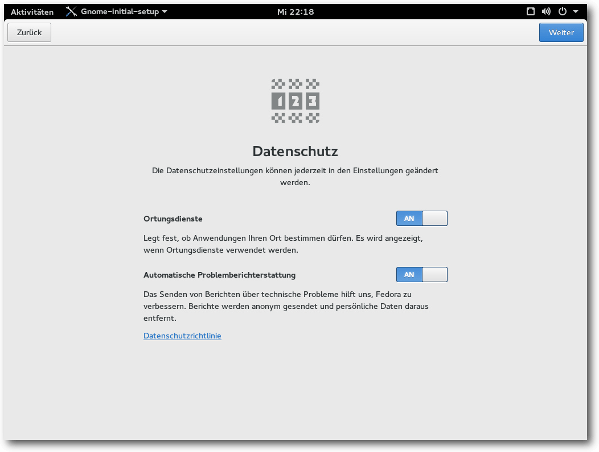
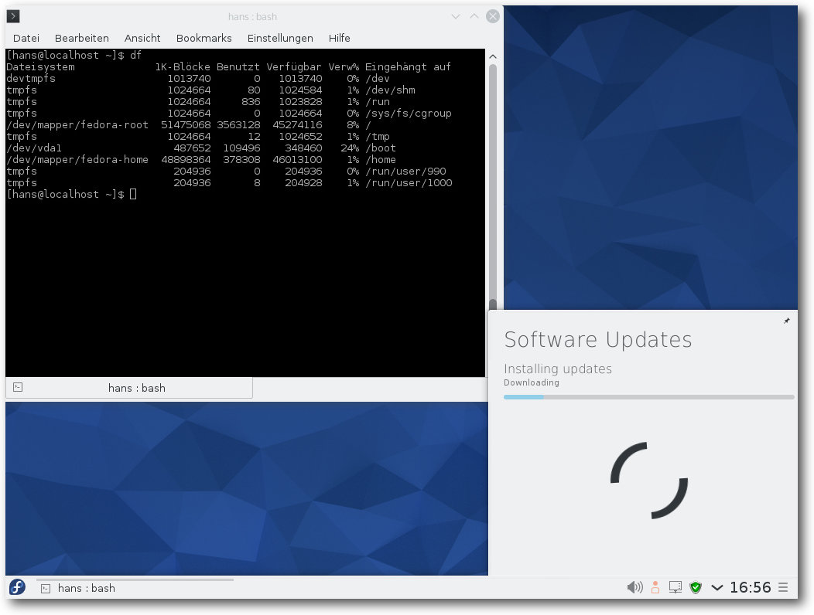

freiesMagazin September 2015
(ISSN 1867-7991)
Themen dieser Ausgabe sind u. a.
OpenBSD – Einmal Kugelfisch, bitte.OpenBSD legt als Teil der BSD-Familie seinen Fokus auf Sicherheit und Korrektheit. Dementsprechend hält es für Linux-Nutzer einige interessante Dinge bereit. Der Artikel bietet einen Überblick über das OpenBSD-Projekt und seine Eigenheiten. (weiterlesen)
Spiele-Kurzvorstellung aus dem Humble PC & Android Bundle 13
Im August gab es das Humble PC & Android Bundle 13, das zehn Spiele für Linux bereit hielt, die auch jetzt nachträglich noch über den Humble Store, Steam oder die Entwickler-Webseite zu beziehen sind. Der Artikel soll die Spiele kurz vorstellen. (weiterlesen)
Review: bq Aquaris E5 – Ubuntu Edition
Das zweite Ubuntu Phone auf dem Markt ist auch das zweite Gerät vom spanischen Hersteller bq. Das E5 ist seit wenigen Wochen erhältlich und ist quasi der größere Bruder vom E4.5, des ersten Ubuntu Phones, das im Februar erstmals in den Verkauf ging. (weiterlesen)
Zum Inhaltsverzeichnis
Inhalt
Linux allgemein
Fedora 22
OpenBSD – Einmal Kugelfisch, bitte.
Projektvorstellung: Distrochooser
Der August im Kernelrückblick
Software
Spiele-Kurzvorstellung aus dem Humble PC & Android Bundle 13
Hardware
Review: bq Aquaris E5 – Ubuntu Edition
Community
Rezension: Python GE-PACKT
Rezension: Das Sketchnote-Handbuch
Rezension: PHP 5.6 und MySQL
Rezension: Meteor
Rezension: NFC mit Android und Arduino
Magazin
Editorial
Leserbriefe
Veranstaltungen
Vorschau
Konventionen
Impressum
Zum Inhaltsverzeichnis
Editorial
Rezensionsschlacht
Diese Ausgabe von freiesMagazin mag für den einen oder anderen vielleicht nicht so interessant scheinen. Fünf der zehn veröffentlichten Artikel (ohne den Kernel-Artikel) sind Rezensionen. Dies hat zwei Gründe: Zum einen hatten wir in den letzten Monaten viele fleißige Leser, die einen Artikel zum Buch geschrieben haben. Für nächsten Monat liegen uns bereits vier neue Rezensionen vor, die wir ohne Probleme auch in der Septemberausgabe hätten veröffentlichen können (aber wir dachten, das wäre etwas zu viel der Rezensionen). Zum anderen gibt es aber wieder das „übliche“ Problem des Artikelmangels, weswegen die Rezensionen diesen Monat und gegebenenfalls auch wieder nächsten die Ausgabe sehr stark dominieren. Von den fünf Artikeln in der vorliegenden Ausgabe wurde einer von Pro-Linux „ausgeliehen“ und der Spieleartikel wurde teilweise extra nur von einem Redakteur geschrieben, weil die Ausgabe sonst so klein gewesen wäre. Für den nächsten Monat sieht das Verhältnis nicht so viel besser aus. Aktuell liegen vier Rezensionen und zwei Artikel vor, die im Oktober veröffentlicht werden können. Das ist nicht genug, um ein Magazin füllen zu können. Die Aussicht auf weitere Artikel ist auch eher düster. Daher möchten wir an dieser Stelle wieder daran erinnern, dass freiesMagazin ein privates Projekt ist, was von den Beiträgen der Community lebt. Es gibt keine festen Autorenmannschaft, sondern jeder mit einem Hang zum Schreiben kann sich im Magazin verwirklichen. Die Liste der Wünsche ist lang [1] – und nicht einmal vollständig. Es werden jeden Monat Themen in freiesMagazin behandelt, die dort nicht zu finden sind, weil ein Autor sich gerade mit einem (für ihn) interessanten Thema beschäftigt und andere daran teilhaben lassen möchte. Und so freuen wir uns auf neue Artikel-Einreichungen für die kommenden Ausgaben bis Jahresende. Diese können einfach an[1] http://www.freiesmagazin.de/artikelwuensche
Beitrag teilen Beitrag kommentieren
Zum Inhaltsverzeichnis
Fedora 22
von Hans-Joachim Baader Dem halbjährlichen Veröffentlichungszyklus entsprechend ist kürzlich Fedora 22 erschienen. In diesem Artikel sollen die Neuerungen dieser Ausgabe erkundet werden. Redaktioneller Hinweis: Der Artikel „Fedora 22“ erschien erstmals bei Pro-Linux [1].Überblick
Vor einem knappen halben Jahr hatte das Fedora-Projekt eine größere Umstrukturierung hinter sich gebracht und die Distribution in die Zweige Workstation, Server und Cloud aufgespalten, wobei die Cloud-Variante als minimale Distribution die gemeinsame Basis bildet [2]. Dafür hatten sich die Entwickler ein ganzes Jahr Zeit gelassen, ein ganzes Jahr ohne neue Fedora-Veröffentlichung, bis schließlich Fedora 21 (siehe freiesMagazin 02/2015 [3]) fertiggestellt war. Trotz der vielen Neuerungen war für die Benutzer keine nennenswerte Umstellung nötig, da die Workstation im Wesentlichen genauso aussah und funktionierte wie zuvor.GNOME 3.16 mit Kalender und Benachrichtigungen.
In Fedora 22 [4] sieht das jedoch etwas anders aus. Die Ersetzung des Paketmanagers Yum durch DNF ist jedenfalls keine Kleinigkeit. DNF war für längere Zeit in Entwicklung und in Fedora verfügbar, aber erst jetzt hielten es die Verantwortlichen für ausgereift und vollständig genug, um Yum als Standardwerkzeug zu ersetzen. Allerdings ist die Änderung so umwälzend auch wieder nicht, denn im Hintergrund arbeitet weiterhin PackageKit, und die grafischen Werkzeuge wie GNOME Software bleiben unverändert. Für den recht beliebten grafischen Paketmanager Yumex gibt es Ersatz in Form von Yumex-dnf. Sichtbar ist die Änderung daher hauptsächlich an der Kommandozeile. Hier ist es nötig, ein paar Befehle neu zu lernen, wobei DNF aber weitgehend die Syntax von Yum beibehält. In Vorbereitung auf den Plan, in der kommenden Version standardmäßig Wayland [5] einzusetzen, wird dieses Mal Wayland für den Login-Bildschirm verwendet, mit einem Fallback im Fehlerfall auf X11. Wayland soll erstmals effizientes Compositing bringen und X11-Anwendungen werden über XWayland weiter laufen. Man darf sich also allmählich auf Wayland freuen. Die KDE-Anwender dürfen sich auf eine weitere bedeutende Änderung einstellen, denn Fedora installiert jetzt standardmäßig Plasma 5. Natürlich laufen KDE4-Anwendungen mit Hilfe der mitinstallierten KDE4-Bibliotheken weiterhin. Fedora dürfte nach Kubuntu die erste größere Distribution sein, die standardmäßig Plasma 5 installiert. Anders als beim Übergang von KDE3 zu KDE4 sollten diesmal keine Einschränkungen auftreten, da keine Programme auf der Strecke blieben – KDE4-Anwendungen laufen ja immer noch. Fedora 22 bietet nun noch mehr Cloud-Varianten an, darunter solche auf Basis von Project Atomic [6], die mit Hilfe von RPM-OSTree [7] verwaltet werden und besonders zur Ausführung von Containern geeignet sein sollen. RPM-OSTree ist generell in Fedora 22 verfügbar. Damit kann man ein Betriebssystem mit einer selbst definierten Paketauswahl erzeugen, doch darüber hinaus werden auch die normalen Paketverwaltungswerkzeuge außer Kraft gesetzt, sodass Aktualisierungen nicht paketweise, sondern für das gesamte System vorgenommen werden. Diese Aktualisierungen werden entweder ganz oder gar nicht (atomar) ausgeführt. Es gibt Überlegungen, dieses Prinzip auf zumindest einen Spin von Fedora 23 anzuwenden. Neben Docker-Images gibt es jetzt auch Vagrant-Boxen für Libvirt und VirtualBox, die Fedora Cloud enthalten. Bei der Server-Variante wurde das Standard-Dateisystem auf XFS geändert, das webbasierte Verwaltungswerkzeug Cockpit wurde erweitert und es wurde eine neue Rolle als Datenbank-Server mit PostgreSQL definiert. Leider können diese Varianten nicht Gegenstand des Artikels sein. Dieser wird sich auf das Desktop-Produkt beschränken. Für den Artikel wurden zwei identische virtuelle Maschinen, 64 Bit, unter KVM mit jeweils 2048 MB RAM frisch aufgesetzt. In der ersten wurde die Workstation-Variante mit GNOME als Desktop installiert, in der anderen der KDE-Spin.
Installation
Fedora Workstation kann von Live-Images (für DVD oder USB-Stick) oder minimalen Bootmedien installiert werden. Die Installation erfordert mindestens 786 MB RAM, wie schon in Version 21. Mit weniger als 768 MB ist die Installation noch mit Einschränkungen möglich. Für den Betrieb werden mehr als 1 GB empfohlen. Der Entwicklungsprozess für das Installationsprogramm Anaconda hat sich geändert, was für die Benutzer zwar keine Auswirkungen hat, aber dennoch erwähnt werden soll. So findet die Entwicklung jetzt auf Github [8] statt, auch die Dokumentation wurde dorthin verlegt. Die Übersetzungen wurden auf die von Red Hat entwickelte offene Übersetzungsplattform Zanata [9] verlegt. Natürlich gab es auch einige Erweiterungen, die aber eher Spezialfälle betreffen. Sie sind im Detail in den Anmerkungen zur Veröffentlichung nachzulesen.Beginn der Installation.
Die Installation selbst hat sich gegenüber Fedora 21 kaum geändert und kann daher kurz abgehandelt werden. Sie beginnt mit der Sprachauswahl, bei der interessanterweise Deutsch als Voreinstellung angeboten wird. Wahrscheinlich bezieht der Installer diese Vorauswahl über GeoIP, da sie nur bei bestehender Netzwerkverbindung zu funktionieren scheint. Das wurde aber nicht genauer untersucht. Danach gelangt man zur Übersichtsseite. Hier ermittelt das Installationsprogramm im Hintergrund bereits einige Dinge, es steht einem aber frei, diese abzuändern, und zwar weitgehend in beliebiger Reihenfolge. Alle Punkte, die vom Benutzer zwingend noch bearbeitet werden müssen, sind mit einem gelben „Warndreieck“ markiert. Zu beachten ist aber, dass der Installer manchmal einen Moment braucht, um die Anzeige neu zu berechnen. Die einzige zwingende Aktion ist die Auswahl des Installationsziels. Die erkannten Festplatten werden durch ein Icon angezeigt.
Übersichtsseite der Installation.
Zu empfehlen ist noch die Auswahl der Tastaturbelegung. Hinter diesem Icon stehen alle Optionen zur Verfügung, einschließlich ungewöhnlicher Belegungen und Feineinstellungen. Auch die Software-Auswahl sollte man sich noch ansehen, wenn man nicht GNOME, sondern eine andere Oberfläche installieren will. Bei der Partitionierung sind die gewohnten Optionen wie die Verschlüsselung der gesamten Festplatte oder einzelner Partitionen, RAID und LVM vorhanden. Auch das Dateisystem Btrfs wird unterstützt, einschließlich seiner spezifischen Funktionen wie Subvolumes. Btrfs ist eine der möglichen Optionen, wenn man die automatische Partitionierung wählt. Außer Btrfs sind auch „normale“ Partitionen und eine LVM-Installation möglich, letztere ist die Standardeinstellung. LVM- und Btrfs-Installation legen eine 500 MB große /boot-Partition mit dem Dateisystem ext4 an. Bei LVM wird der Rest als Root-Partition verwendet, mit btrfs wird eine separate /home-Partition angelegt, die sich aber aufgrund der besonderen Eigenschaften von Btrfs den Plattenplatz mit der Root-Partition teilt. Im Endeffekt ist diese Lösung noch flexibler als LVM.
Manuelle Partitionierung.
Während die Installation dann im Hintergrund läuft, muss man das Root-Passwort setzen und kann optional auch Benutzer anlegen. Nach der Installation ist ein Neustart erforderlich.
Ausstattung
Fedora 22 startet etwa genauso schnell wie sein Vorgänger. Wie immer ist SELinux eingebunden und aktiviert. Als normaler Benutzer merkt man überhaupt nichts davon, solange die Konfiguration korrekt ist. In Fedora 22 wie auch in der Vorversion trat kein sichtbares Problem im Zusammenhang mit SELinux auf. Für den Fall, dass es ein Problem gibt, sei es nach der Installation von zusätzlicher Software oder anderen Änderungen, steht ein Diagnosewerkzeug zur Verfügung. KDE benötigt in Fedora 22 direkt nach dem Start mit einem geöffneten Terminal-Fenster etwa 488 MB RAM, GNOME dagegen 656 MB, im Classic-Modus 568 MB. GNOME unter Wayland verschlingt 663 MB. Bei der Geschwindigkeit sollte sich kein nennenswerter Unterschied zwischen den Desktops feststellen lassen, sofern genug RAM vorhanden ist und die sonstigen Voraussetzungen erfüllt sind. Die Angaben zum Speicherverbrauch sind nur als Anhaltswerte zu sehen, die sich je nach Hardware und Messzeitpunkt erheblich unterscheiden können. Die gemeinsame Basis von Fedora 22 ist der Linux-Kernel 4.0, womit Fedora auch eine der ersten Distributionen mit dem Vierer-Kernel ist. Seit der Vorversion gibt es die Aufteilung der Kernel-Module in ein kleines Paket, das auf die wenigen in der Cloud benötigten Treiber reduziert wurde, und ein Paket mit all den weiteren Treibern. Damit kann man bei Bedarf bis zu 25% kleinere Images erstellen. Die Desktop-Edition Fedora Workstation bringt die Desktop-Umgebung GNOME in Version 3.16. Andere Desktops stehen als „Spins“ zur Verfügung, darunter Xfce 4.12, MATE 1.10, LXQt 0.9.0 und das aktuelle KDE Plasma 5 mit den Bibliotheken des KDE Frameworks 5 und den KDE4-Bibliotheken. Ein Neuankömmling ist der schlanke und erweiterbare Window-Manager Qtile, der nur wenigen ein Begriff sein dürfte. Er ist in Python geschrieben und versucht, wie sein Name andeutet, Fenster in Kacheln zu organisieren und die Mausbenutzung zu minimieren. Weitere Aktualisierungen sind der Haskell-Compiler GHC 7.8, Django 1.8, Perl 5.20, Ruby 2.2 und Ruby on Rails 4.2. Die meisten Pakete wurden mit GCC 4.9 generiert, einige mit GCC 5.1, der auch der Standardcompiler ist. Diese frühe Aufnahme des neuesten GCC war umstritten, da GCC 5 gegenüber GCC 4 eine neue Binärschnittstelle verwendet. In Fedora 22 wurde der Compiler daher so eingerichtet, dass er standardmäßig zur bisherigen Schnittstelle kompatibel ist. Erst mit der nächsten Fedora-Version wird dann der komplette Umstieg erfolgen.Login-Bildschirm von GNOME 3.16 mit Sitzungsauswahl.
GNOME
GNOME 3.16 ist der Standard-Desktop von Fedora 22. Andere Desktops wie KDE, Xfce, Mate oder andere stehen in den Repositories von Fedora zur Verfügung; man muss sie entweder explizit anstelle von GNOME wählen oder auf einen der Fedora-Spins zurückgreifen. Gegenüber GNOME 3.14 in Fedora 21 sind unter anderem die Neuimplementation der Benachrichtigungen, Verbesserungen an der Oberfläche diverser mitgelieferter Programme, besonders des Dateimanagers Nautilus, erneuerte, zeitgemäß aussehende Grafiken, ein neues Theme für die GNOME-Shell, Anzeige der Bildlaufleisten nur noch, wenn sie benötigt werden, neue Programme wie der Kalender, die Zeichentabelle Zeichen und der E-Book-Betrachter Bücher, der momentan nur Comics unterstützt. Beim ersten Start von GNOME wird das Programm GNOME-Initial-Setup gestartet, das das Setzen einiger Optionen und die Eingabe von Online-Konten ermöglicht. Alle Schritte können auch übersprungen und später ausgeführt werden. Neu ist hier eine Privatsphären-Konfigurationsseite. Dieselben Einstellungen, von denen einige neu sind, findet man auch in den Systemeinstellungen. Datenschutzeinstellungen in GNOME-Initial-Setup.
Der GNOME-Login-Manager hat drei Sitzungen vordefiniert, wobei Standard-GNOME die Voreinstellung ist. Die zweite Option ist GNOME Classic, die dritte ist GNOME unter Wayland. Letzteres funktioniert sogar in der virtuellen Maschine und unterscheidet sich optisch zunächst nicht von GNOME. Doch beim ersten Start trat ein massives Problem auf. Die CPU-Last stieg deutlich an und blieb dauerhaft hoch. Ursache war der Login-Manager GDM, der lediglich die Sitzung verwaltet und eigentlich nach dem Login überhaupt nichts mehr zu tun hat. Dieses offensichtliche Problem verschwand nach einem zwischenzeitlichen Paket-Update und Neustart. Ob mit den Updates eine Korrektur hereinkam oder ob der Fehler nur Zufall war, bleibt unklar. Der Dateimanager Nautilus machte unter Wayland Probleme. Doppelklicks auf Ordner oder Dateien zeigten keine Wirkung. Auch der Videoplayer Totem funktionierte nicht, er stürzte beim Start ab. Diese Probleme zeigen, dass Wayland offenbar noch nicht zum breiten Einsatz bereit ist. Zwar wurde das System schon erfolgreich auf Messen vorgeführt, aber Probleme wie die beschriebenen dürfen nicht vorkommen, selbst wenn die Anwendungen möglicherweise nicht direkt Wayland, sondern XWayland nutzen. Die lang geplante Neuimplementation der Benachrichtigungen ändert die Interaktion mit dem Benutzer hauptsächlich in einem Punkt. Während die Benachrichtigungs-Popups weitgehend unverändert blieben, sind ältere Benachrichtigungen, auch solche, die man möglicherweise verpasst hat, jetzt im Kalender-Popup zu finden.

Nachlesen zurückliegender Benachrichtigungen.
Die Grafiken von GNOME wurden erneuert und sollen nun zeitgemäß aussehen. Bis auf den Hintergrund, zu dem keine Alternative mitgeliefert wird, verwendet Fedora wohl das Standard-Aussehen. Neben kleinen Verbesserungen an der Oberfläche diverser mitgelieferter Programme, welche einem gelegentlichen Benutzer nicht weiter auffallen, wurde im Dateimanager Nautilus das bisher unter dem Zahnradsymbol verfügbare Menü durch ein Popover-Menü ersetzt. Die Listendarstellung der Dateien wurde verbessert und das Löschen einer Datei kann nun bereits im Benachrichtigungs-Popup rückgängig gemacht werden, wenn man schnell genug klickt. Ich bin kein Freund von solchen Popover-Menüs, schon gar nicht, wenn zusätzlich noch das Anwendungsmenü zur Verfügung steht. Nur ist dieses Menü dank der Spinnerei der GNOME-Designer nicht im Nautilus-Fenster enthalten, sondern in der globalen Menüleiste, was den Weg der Maus dorthin verlängert. Das ist aber noch nichts gegen die neueste Verschlimmbesserung, die die Bildlaufleisten als Overlay anlegt und sie nur noch angezeigt, wenn sie „benötigt werden“, also wenn man mit der Maus zufällig an den rechten Fensterrand gelangt. Der Standard-Webbrowser unter GNOME ist Firefox 38. Außer vier Plug-ins sind keine Erweiterungen vorinstalliert. Dabei handelt es sich um die GNOME-Shell-Integration, den iTunes Application Detector, das Evince-Plug-in und das OpenH264-Plug-in für Web-Videokonferenzen. Die Office-Suite LibreOffice ist in Version 4.4.3.2 installiert, aber nicht komplett. Fehlende Komponenten wie z. B. Base muss man bei Bedarf nachinstallieren. Die GNOME-Shell kann dank Software-Rendering auf jeder Hardware laufen, auch wenn keine Hardware-3-D-Beschleunigung zur Verfügung steht. Das Software-Rendering ist einigermaßen schnell und durchaus noch benutzbar, doch wird man es wohl kaum ertragen, wenn man keinen sehr schnellen Prozessor hat. Die Situation bessert sich mit einem Mehrkern-Prozessor, doch Videos verzögerungsfrei abzuspielen, ist auf diese Weise schwer. Bei kleinen Videoformaten kann es aber noch gelingen. Bedauerlich ist, dass das GNOME-Tweak-Tool, auf Deutsch „Optimierungswerkzeug“ genannt, weiterhin nicht standardmäßig installiert ist. Denn man benötigt es, um Erweiterungen für die GNOME-Shell zu installieren, da dafür kein Weg in der Standardkonfiguration vorhanden ist. Daneben kann man auch andere Dinge einstellen, die die GNOME-Entwickler nicht in der GUI konfigurierbar gemacht haben.
KDE
Nun ist KDE5, das nicht so genannt werden will, in Fedora angekommen. Damit dürfte Fedora nach Kubuntu die zweite größere Distribution sein, die diesen Schritt vollzieht. In der Vergangenheit zeigte sich jedes Mal, dass solche Versionswechsel grundsätzlich zu früh kamen. Nicht so in diesem Fall, denn die Entwickler hatten ja bereits verkündet, dass der Schritt von KDE4 zu KDE5 für die Anwender trotz vieler interner Umstellungen recht leicht werden sollte. So ist die Desktopumgebung Plasma 5 nicht sehr verschieden von KDE4 und die direkte Fortführung von Plasma in KDE4. Auch die Anwendungen bleiben dieselben, sie müssen nur von KDE4 auf KDE5 portiert werden. Da das nicht bei allen Anwendungen so schnell möglich ist, sind auf absehbare Zeit die KDE4-Bibliotheken und KDE Frameworks 5 parallel installiert, sodass auch KDE4-Programme problemlos laufen. Eine integrierte Desktopumgebung ist das nicht, eher zwei in einer. Aber die Idee der konsistenten Umgebungen ist ohnehin schon seit vielen Jahren gescheitert, weil viele wichtige Programme eine andere GUI-Bibliothek verwenden als der Desktop.KDE Plasma 5 mit einigen Anwendungen.
Plasma 5 lief in der kurzen Testphase genauso zuverlässig wie KDE4 früher, ist weiterhin angenehm zu benutzen und hat die traditionellen Bedienelemente unbeschädigt erhalten. Die Funktionalität ist zumindest im Großen und Ganzen gleich geblieben. Auch die Aktivitäten, die bereits von KDE4 bekannt waren, sind noch vorhanden. Statt der „Cashew“ in der rechten oberen Ecke gibt es nun einen Button oben links, der symbolisieren soll, dass sich dahinter ein Menü verbirgt. Dieses sollte KDE-Anwendern bekannt vorkommen, wie auch die meisten anderen Elemente des Desktops. Plasma bleibt auch in Version 5 ein wenig verspielt mit vielen standardmäßig aktivierten Effekten. Im Gegensatz zu GNOME funktionieren diese aber auch ohne Hardware-3-D-Beschleunigung mit akzeptabler Geschwindigkeit. Nicht ausprobiert wurden im Rahmen dieses Artikels einige neue Komponenten von Plasma 5, darunter BlueDevil zur Verwaltung von Bluetooth-Geräten, KSSHAskPass für die Eingabe von Passwörtern, die zur Entschlüsselung von SSH-Schlüsseln nötig sind, und KScreen, das Programm zur Einrichtung des Displays auf mehreren Monitoren. Weiterhin ist die Auswahl der vorinstallierten Software etwas merkwürdig – Konqueror statt des vielfach populäreren Firefox, Calligra 2.9.4 statt LibreOffice. Immerhin stürzte Calligra bei den Testdateien nicht ab. Der KDE-Spin nutzt jetzt auch den Journald von Systemd für das Loggen, installiert und startet aber weiterhin rsyslog, sodass jetzt das Log in Stereo vorhanden ist.
Multimedia im Browser und auf dem Desktop
Wegen der Softwarepatente in den USA kann Fedora, ebenso wie die meisten anderen Distributionen, nur wenige Medienformate abspielen, da es viele benötigte Codecs nicht mitliefern kann. Die Lösung heißt wie immer RPM Fusion [10]. Diese Seite bietet zusätzliche Repositories, die man leicht hinzufügen kann. Dies gilt für alle Desktops gleichermaßen. Die Installation funktioniert prinzipiell mit Konqueror und Firefox. Während unter GNOME die Installation reibungslos klappte, lieferten unter KDE sowohl Konqueror als auch Firefox am Ende eine Fehlermeldung, dass Apper ein Paket nicht finden konnte. Trotz dieser Meldung, die für Benutzer so aussieht, als wäre die Installation fehlgeschlagen, war aber alles installiert. Der Fehler war schon in Fedora 21 vorhanden. Die meisten Player bieten bekanntlich die Option an, über die Paketverwaltung nach passenden Plug-ins zu suchen. Das funktioniert auch; der einzige Mangel ist, dass man meist die Anwendung neu starten muss, nachdem ein Plug-in installiert wurde. Wer sich auskennt, kann auch alle benötigten Codec-Pakete von Hand installieren. Sie sind sämtlich in Form von GStreamer-Plug-ins von RPM Fusion zu beziehen. Da sowohl die neue Version 1.4 von GStreamer als auch die Version 0.10 noch in Gebrauch sind, installiert man am besten die Codec-Sammlungen „plugins-bad“ und „plugins-ugly“ in allen Varianten für GStreamer 0.10 und GStreamer 1.4. Für GStreamer 0.10 benötigt man außerdem und vor allem das FFmpeg-Plug-in, für GStreamer 1.4 dessen Fork libav. Der Standard-Player für Audio und Video ist unter GNOME der Player „Videos“, früher Totem genannt. Unter KDE sind es Amarok und Dragonplayer. Während Amarok funktionierte, gab es bei Videos mit Dragonplayer wiederum Probleme. Der Ton war da, das Bild aber nicht. Die Installation des Phonon-VLC-Backends und Umschalten auf dieses änderte nichts an dem Problem. Wie auch immer, man installiert statt Dragonplayer lieber bewährte Programme wie (S)MPlayer, VLC oder Xine, die auch viel mehr Funktionalität aufweisen. Anders als noch in Fedora 21 und anders, als im Fedora-Wiki [11] noch beschrieben, ist das von Cisco finanzierte OpenH264-Plugin, das ein freier Videodekoder für WebRTC ist, jetzt vorinstalliert. Es wird aber nicht automatisch aktiviert, das muss man bei Bedarf von Hand machen. Ein schwieriger Punkt sind nach wie vor Flash-Videos auf Webseiten. Einige Seiten versagen ohne Nachrüstung des Adobe Flash Players komplett ihren Dienst. Den Player gibt es für Firefox bzw. Iceweasel zwar noch, er wird aber bis auf Korrekturen von Sicherheitslücken nicht mehr gepflegt. Das größte Problem ist jedoch, dass Mozilla den Benutzern viele lästige Hürden in den Weg legt, wenn sie das Plug-in weiter nutzen wollen. Workarounds sind die Verwendung eines anderen proprietären Browsers wie Google Chrome proprietären oder Chromium mit dem von Google stammenden Pepperflash-Plug-in [12]. Andere Workarounds sind das Herunterladen der Videos, um sie in einem Player offline oder als Stream anzusehen, oder die Installation von Gnash, das jedoch keinen Erfolg garantiert.Startseite von Firefox.
Paketverwaltung und Updates
Die wichtigste Änderung, der Ersatz von Yum durch DNF, wurde bereits erläutert, und gilt für alle Fedora-Varianten gleichermaßen. DNF mag teilweise etwas schneller sein als Yum, benötigt aber manchmal bei einem Aufruf ziemlich lange, um seinen Cache zu aktualisieren. Die Umstellung kann insofern als gelungen bezeichnet werden, als dass es zu keinen Problemen kam. Es besteht aber noch eine gewisse Skepsis gegenüber DNF wegen eventuell fehlender Plug-ins und Änderungen im Verhalten. Das heißt nicht, dass diese gerechtfertigt sein müssen. Die alte, von DNF unabhängige Version von yum steht aber noch unter dem Namen yum-deprecated zur Verfügung. Der Software-Installer ist seit Fedora 20 das Zentrum für Anwender, die zusätzliche Pakete für ihr System suchen. Das Programm ermöglicht in dieser Version auch die Installation von Codecs. Es ähnelt dem Software Center von Ubuntu, besitzt allerdings deutlich weniger Funktionalität. Für eine ernsthafte Systemverwaltung mit DNF und RPM ist es kein Ersatz.Meldung der Verfügbaren Paket-Updates unter KDE.
Unter KDE kommt weiterhin Apper zum Einsatz, an dem sich nichts geändert hat. Auch die Fehler sind noch die gleichen: Die Paketgruppen, die im Apper-Hauptbildschirm offeriert werden, funktionieren weiterhin nicht. Apper ist im Gegensatz zu „GNOME-Software“ eine vollständige Paketverwaltung mit Paketquellen, Updates und Details bis auf die Paketebene. Sie kann die Kommandozeilenprogramme vollständig ersetzen. Die gesamte Paketverwaltung baut unter GNOME und KDE grundsätzlich auf PackageKit auf. Sie funktioniert normalerweise reibungslos und die Updates, wenn sie auch zahlreich sind, sind dank Delta-RPMs oft erstaunlich klein und schnell installiert. Neu verfügbare Updates werden im Benachrichtigungsbereich angezeigt. 
Laufende Paket-Updates unter KDE.
Fazit
Fedora 22 Workstation erweist sich abermals als eine Distribution von hoher Qualität, bei der es kaum etwas zu beanstanden gibt. Fehler können besonders in den ersten Wochen nach der Veröffentlichung auftreten, sind aber selten gravierend. Zudem werden viele anfängliche Fehler schnell behoben. Umso mehr verwundert es, dass einige schon seit über einem halben Jahr bestehende Fehler im Zusammenhang mit Multimedia und Paketinstallation noch nicht behoben sind. Einerseits könnte man argumentieren, dass das die Aufgabe der Entwickler der entsprechenden Software ist, andererseits werden an anderer Stelle selbst Bagatellen behoben, die nicht selten überflüssig erscheinen. Das Experiment mit Wayland kann vorerst als gescheitert betrachtet werden, allerdings handelt es sich wohl um leicht behebbare Probleme. Das Experiment mit KDE5 hingegen ist gelungen und hilft, den Weg zu einem breiten Einsatz von KDE5 zu ebnen. Die Zielgruppe von Fedora besteht klar aus Entwicklern, die für ihre Arbeit einen aktuellen Softwarestand brauchen, Administratoren, die eine Vorschau auf aktuelle Entwicklungen für Red Hat Enterprise Linux erkunden wollen, Administratoren, die die Verteilung von aktuellen Systemständen automatisiert haben, und anderen Benutzern, die kein Problem mit reichlichen und häufigen Updates haben. Durch die vielen Updates ist Fedora immer aktuell und stabilisiert sich schnell. Für die Zielgruppe ist das ideal, für andere Nutzer dagegen nicht zu empfehlen. Denn normale Benutzer wollen keine Änderungen am System, nicht einmal Verbesserungen, außer als bewusste Entscheidung. Jede noch so kleine Änderung am Verhalten, selbst ein geänderter Button, lenkt lediglich von den eigentlichen Aufgaben mit ihren eingespielten Vorgehensweise ab. Solche Benutzer sollten sich aber eher nach einer anderen Distribution umsehen. Links[1] http://www.pro-linux.de/artikel/2/1775/fedora-22.html
[2] http://www.pro-linux.de/artikel/2/1744/fedora-21.html
[3] http://www.freiesmagazin.de/freiesMagazin-2015-02
[4] https://getfedora.org/de/
[5] http://wayland.freedesktop.org/
[6] https://projectatomic.io/
[7] https://wiki.gnome.org/Projects/OSTree
[8] https://github.com/rhinstaller
[9] https://fedora.zanata.org/project/view/anaconda
[10] http://rpmfusion.org/
[11] https://fedoraproject.org/wiki/OpenH264
[12] https://wiki.debian.org/PepperFlashPlayer
| Autoreninformation |
| Hans-Joachim Baader (Webseite) befasst sich bereits seit 1993 mit Linux. 1994 schloss er erfolgreich sein Informatikstudium ab, machte die Softwareentwicklung zum Beruf und ist einer der Betreiber von Pro-Linux.de. |
Beitrag teilen Beitrag kommentieren
Zum Inhaltsverzeichnis
OpenBSD – Einmal Kugelfisch, bitte.
von Ronny Schneider OpenBSD [1] legt als Teil der BSD-Familie seinen Fokus auf Sicherheit und Korrektheit. Dementsprechend hält es für Linux-Nutzer einige interessante Dinge bereit. Dieser Artikel bietet einen Überblick über das OpenBSD-Projekt und seine Eigenheiten.Geschichte
„Free, functional, and secure“ – so lautet das Motto des Betriebssystems OpenBSD (nicht zu verwechseln mit dem Projekt OpenSSL). BSD ist eine Abkürzung und steht für „Berkeley Software Distribution“, welches ursprünglich eine Variante des UNIX-Systems bezeichnete. Heute bezeichnet man mit BSD eine Familie von Betriebssystemen, welche sich vom ursprünglichen BSD ableiten. Dies sind zum Beispiel FreeBSD [2], NetBSD [3], DragonFlyBSD [4] und eben OpenBSD, um das es in diesem Artikel geht. Das „Open“ im Projektnamen deutet auf den kompromisslosen Einsatz der BSD-Lizenz (vereinfachte Form „ISC-Lizenz“ [5]) sowie die Haltung für Freie Software hin, welche das Entwicklerteam vertritt. So wurden schon viele, teils einfache, teils umfangreiche und komplexe Programme nachprogrammiert, um diese in der BSD-Lizenz nutzen zu können. Die BSD-Lizenz unterscheidet sich von der GPL-Lizenz [6] hauptsächlich darin, dass Sie kein Copyleft [7] enthält und somit Änderungen am Quelltext unter einer anderen Lizenz fortgeführt werden können. Dadurch lässt sich unter BSD-Lizenz stehender Quelltext sehr gut auch in kommerziellen Produkten verwenden. Als Abspaltung vom NetBSD-Projekt begann das Team um Theo de Raadt 1995 mit der Programmierung eines BSD-basierten Systems, das heute zu den sichersten [8] Betriebssystemen überhaupt gezählt wird. Als Maskottchen wurde „Puffy“ erkoren; ein Kugelfisch, der den Sicherheitsgedanken symbolisieren soll. Alle sechs Monate erscheint ein neues Stable-Release, zusammen mit einem umfangreichen Artwork. Aktuell lehnt sich die neuste Version 5.7 [9] vom Thema her an die Blues Brothers an – inklusive Poster, Lied und Stickern. Auf diese Weise kann man halbjährlich die neueste OpenBSD-Version im Rahmen eines kleinen Rituals kaufen und bekommt vom Entwicklerteam mehr als nur einen stupiden Datenträger geliefert. Es wirkt zwar etwas skurril, aber so zieht sich in etwa der Humor durch das gesamte OpenBSD-Projekt. Generell trifft man viel Ironie und Sarkasmus an. So kann man bei einem sich aufgehangenem System im Debugger Galgenraten [10] mit Kernel-Begriffen spielen. Durch die regelmäßige Überprüfung der Softwarequellen durch das Entwicklerteam ist inzwischen die Phrase „Dieses Problem wurde in OpenBSD schon vor 6 Monaten gelöst“ aufgekommen.Einsatz
Eingesetzt wird OpenBSD vor allem bei Serversystemen oder im Netzwerkbereich. So ist es geradezu prädestiniert für den Einsatz als Router-, Firewall- oder Serversystem, da das Grundsystem sehr kompakt gehalten ist. Die Konfigurationsdatei der integrierten Firewall pf [11] ist ein Augenschmaus für jeden Systemadministrator – so wie bei vielen anderen Diensten und Projekten, die das OpenBSD-Team direkt betreut, etwa OpenSSHD [12], OpenSMTPD [13], OpenOSPFD sowie OpenBGPD [14] oder CARP [15]. So könnte eine Firewall-Regel für pf in etwa so lauten:pass in on em0 inet proto tcp from any to self port 25,587
Diese Regel erlaubt eingehenden Datenverkehr auf der Schnittstelle
„em0“ in Form der Internetprotokollfamilie TCP von jeder Quelle an die Zielports
25 und 587 auf dem eigenen Rechner. In der gleichen Weise lässt sich ein
SMTP-Server konfigurieren, inklusive Zertifikatsverwaltung für verschiedene
Domains und Relaydirektiven. Beim Verwenden von OpenBSD fängt man so manches Mal
an darüber zu grübeln, wie schwierig und umständlich andere Systeme und
Programme eine spezielle Aufgabenstellung zu lösen vermögen. Warum umständlich,
wenn es auch einfach geht?
Neben der durchdachten Konfiguration ist eine weitere Stärke vom gesamten
Projekt, dass für wirklich jedes kleine Tool oder Programm eine
Manpage [16] gepflegt
wird, ebenso für die eingebauten Treiber, Skripte und Konfigurationsdateien. Auf
diese Weise ist das komplette System wartbar – auch, wenn man bisher nicht mit
OpenBSD zu tun gehabt haben sollte. Ruft man beispielsweise die Manpage des
Ethernetkartentreibers em [17]
auf, so wird aufgelistet, für welche Karten und Chips dieser Treiber entworfen
wurde, welche Protokolle der Treiber verarbeiten kann, welche Geschwindigkeiten
und Zugriffsmethoden unterstützt werden und wie man dies bewerkstelligt.
Die Manpages werden gepflegt und mit jedem neuen Release auf den neuesten Stand
gebracht, sollte sich etwas geändert haben.
Installation
Die Installation von OpenBSD findet textbasiert statt und kann nach einiger Übung innerhalb von weniger als fünf Minuten durchgeführt werden. So wird bei der Installation direkt abgefragt, ob man einen OpenSSH-Server sowie einen NTP-Server automatisch starten lassen möchte oder ob man beabsichtigt, das X-Windows-System X.org später auf dem System laufen zu lassen und dementsprechend automatisch xdm starten soll. Bei der allerersten Installation könnte sich die Installation aber als kleines Abenteuer herausstellen, da sie ohne viele Hinweise und grafische Aufmachung recht trostlos daherkommt. Der Benutzer sollte bereits vor der Installation die Parameter wissen und einige Begriffe aus der BSD-Welt kennen, zum Beispiel den Begriff „Slice“. Die FAQ [18] auf der Webseite des Projektes bietet eine gute Anleitung zur Installation, auch in Spezialfällen. Eine weitere Besonderheit ist die Partitionierung innerhalb von OpenBSD. So werden innerhalb einer Partition „Slices“ [19] angelegt, welche mit den Buchstaben a bis z angesprochen werden, in etwa so wie beim Betriebssystem Windows. Die Verwirrung perfekt macht der Umstand, dass der Buchstabe C das komplette Laufwerk meint. So bezeichnet /dev/wd0c das komplette Laufwerk (zum Beispiel eine Festplatte oder einen USB-Stick) während /dev/wd0a die erste Partition / anspricht. Die FAQ gibt auch Aufschluss, wieso etwas so ist, wie es ist.Der Login-Manager xdm.
Einsatz, die Zweite
Die Performance von OpenBSD hinkt in einigen Punkten hinter anderen Systemen hinterher. Das System verwendet einen Kernel mit einem „Giant Lock“ [20] und ist dementsprechend mit einem Performancemanko belegt. Dies rührt daher, dass im OpenBSD-Kernel keine Nebenläufigkeit stattfindet und somit Berechnungen und Prozessabläufe nicht parallel ablaufen können. Benutzerprogramme sind davon allerdings unabhängig und können mehrere Threads und Prozesse gleichzeitig verwenden. Nur der Kernel „bremst“ die Geschwindigkeit durch seine Architektur. Dies ermöglicht zwar einen kompakten und einfachen Kernelaufbau, wirkt sich allerdings negativ auf die Performance aus. Spürbar ist dies zum Beispiel, wenn häufig auf das Dateisystem zugegriffen werden muss, weshalb OpenBSD nicht oft als reiner Dateiserver oder Datenbank eingesetzt wird (was aber dennoch möglich ist). Eher wird OpenBSD deshalb als Router, Firewall, Web- oder E-Mailserver eingesetzt, weil diese Anwendungsfelder sehr auf den Netzwerkbetrieb ausgerichtet sind. Hier greift auch sehr schön der Sicherheitsaspekt, da gerade Netzwerkanwendungen angreifbar sind. Ein Einsatz als SMTP-Server mit Spamfilter ist kein Hexenwerk. Das Projekt hat sogar einen eigenen Spamfilter für OpenBSD entwickelt und integriert: Spamd [21]. Zusammen mit dem hauseigenen OpenSMTPD-Server [13] ergibt sich so ein sehr homogenes und flexibles Serversystem, welches nach einmaliger Konfiguration still und effektiv seinen Dienst verrichtet. Spamd kann seine Spam- und Sperrlisten mit anderen Spamd-Servern synchronisieren und so eine Redundanz aufbauen. Nichtsdestoweniger lässt sich OpenBSD auch als Desktop-System nutzen. Die meisten bekannten Open-Source-Programme sind portiert worden und als Binärpakete verfügbar. So findet man die üblichen Verdächtigen wie Firefox, Thunderbird, VLC, LyX (inklusive LaTeX), Inkscape, GIMP und viele weitere Programme. Auf Grund des minimalen Ansatzes des Basissystems kann man ein sehr kompaktes und ressourcenschonendes System aufbauen, welches zum Beispiel auf Netbooks oder älteren Computern läuft. Die Desktopumgebungen GNOME und KDE sind vorhanden, ebenso wie zahlreiche Windowmanager. Einem Einsatz als Desktopsystem steht demnach nichts im Wege. Dennoch sollte man sich vor der Installation vergewissern, dass Treiber für die Hardware existieren. Eine Menge Hardware wird noch nicht unterstützt, beispielsweise viele Webcams, Drucker, WLAN- und Netzwerkkarten. Für Hardware, die Firmware benötigt und unterstützt wird (zum Beispiel aktuelle Radeon-Grafikkarten oder Intel WLAN-Karten), gibt es die Möglichkeit diese Firmware [22] nachzuladen und so dem Gerät Leben einzuhauchen. Dies ist aber noch nicht bei vielen Geräten der Fall – dementsprechend freut sich das Entwicklerteam über aktive Mitarbeit. Es gibt aktuell keine Virtualisierungssoftware, die unter OpenBSD läuft. Somit fällt ein Einsatz als Hypervisor aus. Programme wie Virtualbox [23], Bochs [24], XEN [25] oder VMWare-Produkte [26] gibt es für OpenBSD (noch) nicht. Als Gastbetriebssystem läuft OpenBSD allerdings in den meisten Virtualisierungslösungen. Auf diese Weise kann man unkompliziert einen Blick auf das System werfen und experimentieren.Der vorinstallierte FVWM-Fenstermanager.
Fazit
Insgesamt ist OpenBSD ein sehr interessantes Betriebssystem, wenn man abseits der bekannteren UNIX-ähnlichen Systeme schaut. Es läuft auf einigen, teils alten oder (aus Heimanwender/PC-Sicht) exotischen Plattformen, die für sich alleine auch ein interessantes Thema darstellen. Das System ist sehr homogen und bietet eine hervorragende Dokumentation und Konfiguration. Der sechsmonatige Rhythmus der Veröffentlichung des aktuellen Releases sorgt für eine gute Planbarkeit der Aktualisierung. Mit dem Nutzen des CURRENT-Zweiges [27] bleibt man durch beständiges Neukompilieren des Basissystems am Ball. Als Server kann man OpenBSD sehr gut einsetzen. Der Sicherheitsaspekt ist gerade in heutigen Zeiten eine nicht zu verachtende Sache. Ebenso eignet es sich auf Grund der guten Dokumentation und Homogenität wunderbar als Plattform für eigene Entwicklungen oder Produkte. Wem all dies zusagt, der kann mit dem Kugelfisch unter den Betriebssystem einen interessanten Weggefährten finden. Links[1] http://www.openbsd.org/
[2] http://www.freebsd.org/
[3] http://www.netbsd.org/
[4] http://www.dragonflybsd.org/
[5] http://www.openbsd.org/policy.html
[6] http://www.gnu.org/licenses/licenses.de.html
[7] http://www.gnu.org/copyleft/copyleft.de.html
[8] http://www.openbsd.org/security.html
[9] http://www.openbsd.org/57.html
[10] http://www.openbsd.org/cgi-bin/man.cgi/OpenBSD-current/man6/hangman.6?query=hangman&sec=6
[11] http://www.openbsd.org/faq/pf/
[12] http://www.openssh.com/
[13] https://www.opensmtpd.org/
[14] http://www.openbgp.org/
[15] http://www.openbsd.org/cgi-bin/man.cgi/OpenBSD-current/man4/carp.4
[16] http://www.openbsd.org/cgi-bin/man.cgi/mandoc/man8/man.cgi.8
[17] http://www.openbsd.org/cgi-bin/man.cgi/OpenBSD-current/man4/em.4?query=em
[18] http://www.openbsd.org/faq/
[19] http://www.openbsd.org/faq/faq14.html
[20] http://www.openbsd.org/papers/asiabsdcon2010_smp_for_sgi_paper.pdf
[21] http://www.openbsd.org/spamd/
[22] http://www.openbsd.org/cgi-bin/man.cgi/OpenBSD-current/man1/fw_update.1?query=fw_update
[23] https://www.virtualbox.org/
[24] http://bochs.sourceforge.net/
[25] http://www.xenproject.org/
[26] http://www.vmware.com/
[27] http://www.openbsd.org/faq/faq5.html#Flavors
| Autoreninformation |
| Ronny Schneider (Webseite) beschäftigt sich seit 2008 intensiv mit Open-Source-Software, speziell Linux und BSD. Der gelernte IT-Systemelektroniker möchte dieses Hobby gerne zu seinem Beruf machen. |
Beitrag teilen Beitrag kommentieren
Zum Inhaltsverzeichnis
Projektvorstellung: Distrochooser
von Christoph Müller Für Anfänger ist die Orientierung in der Linuxwelt oft undurchsichtig: „Man sieht vor lauter Pinguinen die Eisscholle nicht“. An dieser Stelle soll der Webdienst Distrochooser [1] helfen, indem er durch die Beantwortung simpler Fragen eine Liste von Distributionen zur besseren Orientierung liefert.Der Distrochooser ist kein Orakel
Der Distrochooser ist ein Dienst für Anfänger in Linux. Er soll eine Orientierungshilfe sein und ist kein Orakel. Das Ergebnis umfasst nur Vorschläge. Es kann durchaus vorkommen, dass man mit einer anderen Distribution besser klarkommt als mit denen, die vom Distrochooser vorgeschlagen werden. Wenn man bereits Linux nutzt, sollte man auch keine unangebrachte Kritik am Service üben, wenn nicht die persönlich bevorzugte Distribution an erster Stelle steht oder gar komplett andere Ergebnisse geliefert werden. Eine gegebenenfalls falsch ausgesprochene Empfehlung liegt daran, dass die Komplexität an gegebenen Antworten ab einem gewissen Punkt das Maß übersteigt, als das es durch ein Programm wie gewünscht wiedergegeben werden kann. Wer mehr zu dieser Problematik erfahren will, sollte sich diesen Blogbeitrag „Ein Wort zu Kombinationen im Distrochooser“ [2] durchlesen.Die zahlreichen Fragen des Distrochoosers.
Der Distrochooser beschränkt sich auf bekannte Distributionen bzw. solche, die von Benutzern vorgeschlagen wurden. Aktuell (Stand 19. Juli 2015) stehen 25 Distributionen zur Verfügung:
- Antergos
- Arch Linux
- Bedrock Linux
- CentOS
- Debian
- elementary OS
- Fedora
- Gentoo Linux
- Knoppix
- Kubuntu
- Linux Mint
- Lubuntu
- Mageia
- Manjaro
- NixOS Linux
- openSuse
- PCLinuxOS
- Puppy Linux
- Slackware
- Tails
- Ubuntu
- Ubuntu GNOME
- Ubuntu MATE
- Xubuntu
- Zorin OS
Was kann der Distrochooser?
Der Distrochooser umfasst zur Ermittlung der Vorschläge Fragen zu den Themenbereichen PC-, Linux- und Hardwarekenntnisse, persönliche Anforderungen, Installation, Umfang, Preismodell, Softwaremanagement, Ideologien, Datenschutz und Benutzererfahrung. Es wird nicht vorausgesetzt, dass jede Frage aus diesen Gebieten beantwortet wird. Jedoch lässt sich als Faustregel festlegen: Je mehr beantwortet wird, desto genauer werden die Ergebnisse.Ermittlung der Distributionen
Die Ermittlung der Vorschläge erfolgt durch die Auswertung der Fragen zu den zuvor genannten Themengebieten. Bei der Ermittlung der Vorschläge arbeitet der Distrochooser in zwei Modi: einem absoluten und einem relativen Modus, die je nach gegebenen Antworten gewechselt werden. Der Distrochooser versucht im absoluten Modus genau passende Distributionen zu ermitteln. Es werden nur jene präsentiert, die auch genau zu den gegebenen Antworten passen. Mit der Menge an gegebenen Antworten ist es jedoch möglich, dass keine Distribution zu allen Antworten vollständig passt. In diesem Fall wechselt der Distrochooser in den relativen Modus. Im relativen Modus werden alle Distributionen mit einem Prozentsatz versehen. Der Prozentsatz repräsentiert die Übereinstimmung mit den gegebenen Antworten.Im relativen Modus wird die Übereinstimmung mit den gegebenen Antworten mit prozentualen Werten dargestellt.
Jede Distribution besitzt eine Detailseite. In der Detailseite werden weitere Informationen zu der jeweiligen Distribution präsentiert, zum Beispiel Screenshots.
Die Detailseite zeigt mehr Informationen zu einer Distribution.
Zusätzlich wird in einer tabellarischen Form die Grundlage für die Ermittlung des Ergebnisses dargestellt. So kann man klar erkennen, wieso bestimmte Distributionen im Ergebnis enthalten sind – oder eben nicht.
Die Matrix zeigt an, welche Antwort sich auf wie auf welche Distribution ausgewirkt hat.
Ausblick
Der Distrochooser ist keineswegs fertig. Erst kürzlich wurden neue Funktionen, z. B. zur Bewertung der Ergebnisse, eingepflegt. Ingesamt ist der Web-Service inzwischen in einem sehr fortgeschrittenen Stadium: Es gab bereits einen Vorgänger, der mehr als 10 000 Mal verwendet wurde. Viele Anregungen zum „Linux Distribution Chooser 1“ wurden in der neuen Version umgesetzt. Mit zukünftigen Updates werden vor allem neue Funktionen zur Visualisierung der Ergebnisse, aber auch neue Inhalte (Fragen, Distributionen) nachgereicht. Der Distrochooser selbst ist freie Software. Der Quelltext des Projekts ist auf GitHub [3] gespeichert. Vorschläge für Funktionswünsche, aber auch Ideen für neue Distributionen werden gerne entgegengenommen. Der Distrochooser kann unter der Web-Adresse http://distrochooser.de/ ausprobiert werden und steht in Deutsch und Englisch zur Verfügung. Links[1] http://distrochooser.de/
[2] http://0fury.de/2015/04/ein-wort-zu-kombinationen-im-distrochooser/
[3] https://github.com/squarerootfury/distrochooser/
| Autoreninformation |
| Christoph Müller (Webseite) ist Softwareentwickler und arbeitet an mehreren (freien) Softwareprojekten, darunter dem Distrochooser. Außerdem betreibt er einen Blog zu diversen Themen rund um Linux. |
Beitrag teilen Beitrag kommentieren
Zum Inhaltsverzeichnis
Der August im Kernelrückblick
von Mathias Menzer Basis aller Distributionen ist der Linux-Kernel, der fortwährend weiterentwickelt wird. Welche Geräte in einem halben Jahr unterstützt werden und welche Funktionen neu hinzukommen, erfährt man, wenn man den aktuellen Entwickler-Kernel im Auge behält.Die Entwicklung von Linux 4.2
Der Juli endete mit Linux 4.2-rc4 mitten im Entwicklungszyklus der neuen Linux-Version (siehe „Der Juli im Kernelrückblick“, freiesMagazin 08/2015 [1]). Sehr zum Verdruss von Linux-Hauptentwickler Torvalds wollte sich auch im August erst einmal keine Beruhigung einstellen und so kam Linux 4.2-rc5 [2] mit nur ein paar Änderungen weniger als die Vorversion. Die umfangreichste Änderung hierbei war die Lizenzänderung hin zu einem Mehrfach-Lizenz-Modell [3] für einen RDMA-Treiber [4], welcher direkten Speicherzugriff von einem anderen System aus ermöglicht. Dies brachte jedoch nur Anpassungen am Lizenztext und keine funktionalen Änderungen mit. Anders dagegen ein iSCSI [5] von QLogic, der mit größeren Korrekturen und Verbesserungen bedacht wurde, die jedoch nur einem eingeschränkten Anwenderkreis zugute kommen. Mehr Nutzer werden sich für die Korrekturen an den freien Grafik-Treibern radeon und nouveau finden, von denen sich ebenfalls einige in 4.2-rc5 finden. Insofern befand sich Linux 4.2-rc6 [6] auf einem durchaus guten Weg. Die Zahl der Änderungen war überschaubar geblieben und die aufgenommenen Patches betrafen allzu problematische Bereiche. Dabei fiel besonders die ARC-Architektur [7] auf, der die Entwickler einige Verbesserungen für das Locking spendierten, also die Sperrung von Systemressourcen durch einen Prozess, um konkurrierende Zugriffe zu verhindern. ARC-Prozessoren weisen einen reduzierten Befehlssatz (RISC [8]) gegenüber x86 und vergleichbaren Architekturen auf und kommen primär in spezialisierten Geräten wie beispielsweise Netzwerkspeicher oder Internet-of-Things-Anwendungen [9] zum Einsatz. Linux 4.2-rc7 [10] ließ noch Raum für Hoffnung, dass es sich um die letzte Entwicklerversion handeln könnte. Einige der eingegangenen Änderungen betrafen Fehler, die auf die Überarbeitung des Codes für die x86-Architektur zurückzuführen waren und die im Laufe des Entwicklungszyklus von 4.2 immer mal wieder aufgetreten waren. Für einige Anwender dürften jedoch Korrekturen des Treiber für Eingabegeräte von Wacom [11] von größerem Interesse sein. Hier trat bei einigen Eingabe-Tablets das Problem auf, dass beim Wechsel zwischen der Nutzung als Touchpad und mit Stift die Auflösung nicht angepasst wurde und die Nutzung damit teilweise stark eingeschränkt sein konnte. Letztlich gab es noch Verbesserungen an den Netzwerktreibern für Freescale-Prozessoren [12]. Es sollte die letzte Version vor der Freigabe sein, und dabei blieb es dann auch. Linux 4.2-rc8 [13] schrumpfte auf 136 Commits zurück und der größte Teil der geänderten Quelltextzeilen entfiel auf die Rücknahme einiger Neuerungen. Dies war einmal eine Schnittstelle für den Versand von Daten mittels Infrarot-Geräten, die nicht die erhoffte Qualität aufgewiesen hatte und nun in eine der folgenden Linux-Versionen Einzug halten wird. Ebenso muss eine Erweiterung nochmal auf die Ersatzbank, die die automatische Erkennung der Unterstützung für Native Command Queing (NCQ [14]) für einzelne Geräte ermöglicht. NCQ dient dazu, Befehle an Massenspeicher in eine sinnvolle Reihenfolge zu bringen, um Schreib- und Lesevorgänge möglichst effizient und schnell zu gestalten. Tatsächlich kam dann Ende August die finale Veröffentlichung [15]. Die Änderungen waren sehr überschaubar – gerade mal 46 Commits, von denen alleine 9 die Merges darstellen. Diese stellten kleinere Korrekturen dar und die umfangreichste davon betraf CANBUS [16], ein im Automobil-Bereich verbreitetes Protokoll für die Kommunikation von Steuergeräten.Das Release von Linux 4.2
Insgesamt nahm die Entwicklung des neuen Linux-Kernels 69 Tage in Anspruch. Dabei wuchs er gegenüber der Vorversion besonders stark an und stellt in diesem Punkt auch einen neuen Rekord auf. Denn obwohl 4.2 mit knapp über einer Million an „Insertions“ (hinzugefügte Quelltextzeilen) nur an dritter Stelle seit Beginn der 3er-Kernel-Reihe liegt, rührt diese Anzahl in erster Linie von aufgenommenen Treibern her, während bei Linux 3.2 und 3.7 Umzüge von Code in andere Bereiche Ursache der hohen Zahlen war. Patches bilden solche Verschiebungen so ab, dass eine Codezeile an einer Stelle gelöscht und an anderer Stelle wieder hinzugefügt wird. Somit brachte 4.2 den Kernel um fast 800.000 Zeilen nach vorne, während die 3.2 und 3.7 jeweils zwischen 300.000 und 400.000 Zeilen anwuchsen. Gut die Hälfte des Zuwachses von Linux 4.2 ist dem neuen amdgpu-Treiber geschuldet. Dieser soll neuere AMD-Grafikkerne unterstützen, die auch in Hochleistungskarten der Serie Radeon R9 zu finden sind. Noch werden nicht alle Funktionen der Grafikeinheiten unterstützt, aber wird sich mit kommenden Kernel-Versionen nach und nach ändern. Um einiges kleiner präsentierte sich der Virtio-GPU-Treiber, der eine Grafikkomponente innerhalb von virtuellen Maschinen zur Verfügung stellt. Er unterstützt auch das durch Software gesteuerte Umschalten der Bildschirmauflösung oder Kernel Mode Setting [17], das bereits mit Linux 2.6.29 eingeführt worden war (siehe „Ein Tuz für den Kernel“, freiesMagazin 04/2009 [18]). Das Dateisystem F2FS [19] bekam neue Funktionen zur Reservierung von Speicherplatz spendiert, vor allem jedoch ist es nun in der Lage, Dateien ohne zusätzliche Erweiterungen verschlüsselt zu speichern und natürlich wieder zu entschlüsseln. Es folgt damit ext4, das unter Linux 4.1 bereits mit dieser Fähigkeit versehen wurde und an dessen Umsetzung sich F2FS-Entwickler orientiert haben. Interessant könnte dies für Mobilgeräte werden, die fast ausschließlich mit Flash-Speichern [20] ausgestattet sind, für die F2FS ja entwickelt wurde. Zumindest Linux-basierten Geräten steht hier in Zukunft eine einfache Möglichkeit zur Verfügung, um die Daten des Besitzers zu schützen. Der Umgang mit den in der gleichen Linux-Version wie F2FS eingeführten Control Groups (siehe „Der Februar im Kernelrückblick“, freiesMagazin 03/2013 [21]) wird immer mal wieder verbessert. Dabei handelt es sich um einen Mechanismus zum Verwalten von Rechenzeit, Arbeitsspeicher und anderer Ressourcen anhand von Gruppen zusammengehöriger Prozesse. Diesmal wurde der Umgang mit den Dirty Pages optimiert. So werden Bereiche im Arbeitsspeicher genannt, die zwischengelagerte Daten von Massenspeichern enthalten und die in diesem Zwischenspeicher geändert wurden. Diese müssen auf den Massenspeicher zurückgeschrieben werden, bevor der jeweilige Teil des Arbeitsspeichers wieder freigegeben werden kann. Dieser Vorgang, „Writeback“ genannt, ist bislang in Verbindung mit den Control Groups nicht effizient, da deren Speicher- und Bandbreiten-Begrenzungen bisweilen dazwischenfunken. Ein Satz an Patches von Tejun Heo soll hier künftig Abhilfe schaffen. GENEVE (Generic Network Virtualization Encapsulation [22]) befindet sich noch im Status eines Internet-Draft [23], doch ein erster Treiber hierfür hat es schon in den Linux-Kernel geschafft. GENEVE stellt ein Tunnel-Protokoll für die Anwendungen in virtualisierten Netzwerkumgebungen dar. Weiterhin unterstützt das Netzwerk-Dateisystem CIFS [24] nun die Version 3.1.1 des SMB-Protokolls, worin eine Funktion zum direkten Kopieren von Daten auf dem Server definiert ist. Bislang werden beim Kopiervorgang innerhalb einer CIFS-Freigabe die Daten trotzdem über das Netzwerk zum Client und wieder auf den neuen Speicherplatz auf dem Server übertragen. XFS [25] unterstützt nun DAX („Direct Access“), das den direkten Zugriff auf Daten auf einem Datenträger unter Umgehung des Arbeitsspeicher ermöglicht. DAX wurde noch in Linux 4.0 aufgenommen und zu diesem Zeitpunkt bereits von ext4 unterstützt (siehe „Der April im Kernelrückblick“, freiesMagazin 05/2015 [26]). Linux 4.2 bringt noch viele weitere Neuerungen mit, die Unterstützung für die Interprozesskommunikation kdbus ist jedoch nicht dabei. Darüber wird in einem späteren Kernelrückblick zu berichten sein. Links[1] http://www.freiesmagazin.de/freiesMagazin-2015-08
[2] https://lkml.org/lkml/2015/8/2/211
[3] https://de.wikipedia.org/wiki/Mehrfachlizenzierung
[4] https://en.wikipedia.org/wiki/Remote_direct_memory_access
[5] https://de.wikipedia.org/wiki/ISCSI
[6] https://lkml.org/lkml/2015/8/9/125
[7] https://en.wikipedia.org/wiki/ARC_(processor)
[8] https://de.wikipedia.org/wiki/Reduced_Instruction_Set_Computer
[9] https://de.wikipedia.org/wiki/Internet_der_Dinge
[10] https://lkml.org/lkml/2015/8/16/87
[11] https://de.wikipedia.org/wiki/Wacom
[12] https://de.wikipedia.org/wiki/Freescale_Semiconductor
[13] https://lkml.org/lkml/2015/8/24/9
[14] https://de.wikipedia.org/wiki/Native_Command_Queuing
[15] https://lkml.org/lkml/2015/8/30/96
[16] https://de.wikipedia.org/wiki/Controller_Area_Network
[17] https://de.wikipedia.org/wiki/Mode-Setting
[18] http://www.freiesmagazin.de/freiesMagazin-2009-04
[19] https://de.wikipedia.org/wiki/F2FS
[20] https://de.wikipedia.org/wiki/Flash-Speicher
[21] http://www.freiesmagazin.de/freiesMagazin-2013-03
[22] https://tools.ietf.org/html/draft-gross-geneve
[23] https://de.wikipedia.org/wiki/Request_for_Comments#Internet-Draft
[24] https://de.wikipedia.org/wiki/Server_Message_Block#Common_Internet_File_System_(CIFS)
[25] https://de.wikipedia.org/wiki/XFS_(Dateisystem)
[26] http://www.freiesmagazin.de/freiesMagazin-2015-05
| Autoreninformation |
| Mathias Menzer (Webseite) behält die Entwicklung des Linux-Kernels im Blick, um über kommende Funktionen von Linux auf dem Laufenden zu bleiben und immer mit komplizierten Begriffen dienen zu können. |
Beitrag teilen Beitrag kommentieren
Zum Inhaltsverzeichnis
Spiele-Kurzvorstellung aus dem Humble PC & Android Bundle 13
von Dominik Wagenführ Im August gab es das Humble PC & Android Bundle 13 [1], das zehn Spiele für Linux bereit hielt, die auch jetzt nachträglich noch über den Humble Store, Steam oder die Entwickler-Webseite zu beziehen sind. Der Artikel soll die Spiele kurz vorstellen.Neverending Nighmare
In „Neverending Nighmare“ [2] von Infinitap Games erlebt man genau diesen niemals endenden Albtraum. Der Protagonist läuft jeden Tag rastlos durch das düstere Haus, um immer weitere, schreckliche Entdeckungen zu machen. Dabei geht es sehr blutig zu, aber vor allem der psychologische Horror ist zu spüren. Anstatt zu sterben, wacht man einfach im eigenen Bett auf, um den Albtraum erneut zu erleben. Das Spiel ist englisch vertont mit deutschen Untertiteln, wodurch es sich auch für Nicht-Englisch-Sprachler eignet. Die Stilmittel der Bleistiftgrafik sind sehr simpel, aber auch effektiv eingesetzt und passen einfach zum Spielgefühl.Neverending Nighmare.
Crimsonland
Im Spiel „Crimsonland“ von 10tons [3] geht es blutig weiter. Bei dem Spiel handelt es sich um einen einfachen Top-Down-Shooter, bei dem man eine gewisse Zeit in einer Masse von heranströmenden Monstern, Aliens oder anderen Kreaturen überleben muss. Zur Verteidigung stehen diverse Waffen und Powerups bereit, die man in einem Level einsammeln kann.Crimsonland.
Monster Loves You!
Monströs geht es weiter in „Monster Loves You!“ [4] von Dejobaan Games. In dem Spiel wechselt man die übliche Perspektive und mimt ein Monster, welches als kleiner Schleimklumpen in einem Tümpel heranwächst und sich bis ins Erwachsenenalter retten muss. Verschiedene Aufgaben und Entscheidungen während des Spiels lassen das Monster dann eher freundlich, intelligent oder grausam werden. Obwohl das Spiel recht simpel ist und nur aus Text lesen und Antwort wählen besteht, ist es interessant zu sehen, in welche Richtung sich das eigene Monster entwickelt. Leider steht das Spiel nur in englischer Sprache bereit, wodurch es sich für Nicht-Englisch-Sprachler gar nicht eignet.Monster Loves You!
Beatbuddy
„Beatbuddy“ [5] von THREAKS war einigen Humble-Käufern schon bekannt, da es bereits im Februar 2014 im Humble Indie Bundle 11 enthalten war. In dem Spiel muss man die Welt Symphonia retten und schwimmt dafür durch das Meer und bekämpft zahlreiche Kreaturen mit verschiedenen Beats. Von der Spielidee erinnert Beatbuddy etwas das überaus gute „Aquaria“ [6], stellt die Musik aber noch mehr in den Vordergrund, die Story dafür etwas hinten an.Beatbuddy.
Fotonica
Musikalisch geht es in „Fotonica“ [7] von Santa Radione weiter. Es handelt sich um ein „simples“ Rennspiel, welches mit einer einzigen Taste auskommt, die man gedrückt halten muss, um zu rennen, und loslassen kann, um zu springen. So einfach das klingt, kommt es auf extrem gutes Timing an, um die Level meistern zu können. Die Strichgrafik des Spiels wirkt zwar eher spartanisch, unterstützt den Geschwindigkeitseffekt aber genauso wie die dazugehörige Musik. Wer Spiele à la „Bit.Trip Runner“ [8] mag, wird ggf. auch mit Fotonica seine Freude haben.Fotonica.
Crowntakers
Etwas mehr Story gibt es in „Crowntakers“ [9] von Bulwark Studios zu erleben. Der Held des Adventures beginnt sein Abenteuer damit, dass sein Vater, der König, gefangen gehalten wird und er ihn befreien soll. So zieht man mit seinem Charakter durch das Hexagon-Land auf der Suche nach Schätzen und Abenteuern, kämpft gegen Tiere und Monster und erforscht Türme und Höhlen. Es handelt sich dabei um ein rundenbasiertes Adventure, sodass in einem Kampf abwechselnd man selbst und die Gegner an der Reihe sind. Da das Spiel aufgrund der unterschiedlichen Quests sehr textlastig ist und nur in englischer Sprache zur Verfügung steht, ist für Nicht-Englisch-Sprachler damit nicht geeignet.Crowntakers.
TinyKeep
Verliese erkundet man in dem Dungeon Crawler „TinyKeep“ [10] von Phigames. In einem eben solchen erwacht man ohne Hintergrund, wie man es dorthin geschafft hat. Einzig ein Notizzettel von einer Maggie macht klar, was man zu tun hat: Entkommen! Die Wachen und diverse Fallen stören dabei natürlich enorm. Mit Münzen kann man sich am Ende jedes Verlies neue Fähigkeiten kaufen. Das Spiel ist recht einfach zu meistern, lebt aber von den zufallsgenerierten Level. Die Sprachausgabe ist klasse, leider aber nur auf Englisch, wodurch nicht jeder etwas mit dem Spiel anfangen kann.TinyKeep.
Strata
„Strata“ [11] von Graveck ist schnell erklärt: Man versucht verschiedenfarbige Bänder auf einem Raster so übereinander zu legen, dass die darunterliegenden Felder mit der korrekten Farbe überdeckt werden. Was anfangs sehr leicht ist, wird spätestens ab dem 4x4-Raster zu einem echt harten Denkspiel.Strata.
Doodle God
Auch ein Denkspiel, aber der anderen Art ist „Doodle God“ [12] von JoyBits. Wer wollte nicht immer schon einmal Gott spielen und die Erde zum Leben erwecken? Dabei ist das Spiel sehr simpel: Durch die Kombination von zwei Elementen entstehen neue. So ergibt Erde und Wasser Lehm. Und wenn man Lehm mit Feuer mischt, enthält man Ziegel. Und zwei Ziegel ergeben eine Mauer. Auf die Art versucht man die Erde mit Elementen, Tieren und irgendwann auch einmal Menschen zu erfüllen. Neben der Hauptmission gibt es zahlreiche Nebenmissionen, in denen man beispielsweise von einer Insel entkommen oder eine Prinzessin vor dem Drachen retten muss. Obwohl oder gerade weil das Spielprinzip so simpel ist, kann es einige Zeit vor dem Bildschirm fesseln. Die Sprachausgabe ist englisch, die Texte aber alle deutsch.Doodle God.
Secret of the Magic Crystals
Das letzte, vorgestellte Spiel ist „Secret of the Magic Crystals“ von Artery Games [13]. In dem Spiel übernimmt man die Aufzucht eines Pferdes/Einhorns, kann dieses auf einem Parcours herumführen, füttern und diverse Gimmicks wie Sattel oder Schleifen kaufen. Die Herausforderungen sind dabei aber extrem simpel und wenig fordernd für Erwachsene, sodass sich das Spiel wahrscheinlich eher an Kinder richtet. Das im Humble Bundle beiliegende PDF-Ausmalbuch deutet auch darauf hin. Das Spiel steht auch in deutscher Sprache zur Verfügung.Secret of the Magic Crystals.
Fazit
Der Artikel sollte nur kurz einige Spiele für Linux vorstellen, von denen man ggf. noch nicht viel gehört hat. Das Humble Bundle ist daher immer einen Blick wert, wenn man neuartige Spiele kennenlernen möchte. Dafür gibt es unter Linux inzwischen bereits Massen. Links[1] https://www.humblebundle.com/
[2] http://neverendingnightmares.com/
[3] http://www.10tons.com/
[4] http://www.monsterlovesyou.com/
[5] http://beatbuddy.com/
[6] http://www.bit-blot.com/aquaria/
[7] http://www.fotonica-game.com/
[8] http://totallychoice.com/games/bittrip-runner
[9] http://www.bulwarkstudios.com/en/project/crowntakers/
[10] http://tinykeep.com/
[11] http://www.graveck.com/strata/
[12] http://joybits.org/games/doodle-god/
[13] http://www.artery-studios.com/
| Autoreninformation |
| Dominik Wagenführ (Webseite) schaut sich die Humble Bundle immer genau an, da in der Regel immer ein oder zwei interessante, neuartige Spiele darin enthalten sind. |
Beitrag teilen Beitrag kommentieren
Zum Inhaltsverzeichnis
Review: bq Aquaris E5 – Ubuntu Edition
von Sujeevan Vijayakumaran Das zweite Ubuntu Phone auf dem Markt ist auch das zweite Gerät vom spanischen Hersteller bq. Das E5 ist seit wenigen Wochen erhältlich und ist quasi der größere Bruder vom E4.5, des ersten Ubuntu Phones, das im Februar erstmals in den Verkauf ging.Software
Das bq Aquaris E5 [1] ist neben dem bq Aquaris E4.5 [2] das zweite Smartphone vom spanischen Hersteller bq, welches mit UbuJPGntu ausgeliefert wird. Wie auch beim Meizu MX4 läuft auf allen drei Geräten dieselbe Software-Ausstattung, sodass alle Geräte dieselben Features besitzen. Unterschiede in der Software betreffen dann eher die Hardware-Unterstützung, die für den Endnutzer sowieso nicht direkt sichtbar ist.Die drei Geschwister nebeneinander: E4.5, E5 und MX4 (v.l.n.r.).
Alle Softwareeigenschaften, die mit der verbauten Hardware zusammenhängen, werden im folgenden Text mit der jeweiligen Hardware genannt.
Hardware
Angetrieben wird das Aquaris E5 von einem Quad Core MediaTek Prozessor mit einer Taktfrequenz von bis zu 1.3 GHz. Die verbaute GPU kommt auf eine Taktrate von 500 MHz. Die Größe des Arbeitsspeichers beträgt 1 GB.
Das E4.5 und E5 nebeneinander.
Die exakt identische CPU wird auch im Aquaris E4.5 verbaut. Dies merkt man auch im täglichen Gebrauch, da es im direkten Vergleich weder spürbar schneller noch langsamer ist. Der Start von Apps dauert mit diesem Gerät mit etwa 5 Sekunden verhältnismäßig lange. Beim Wechseln zwischen Scopes sieht man hin und wieder ein paar Ruckler, die im Alltag aber nur selten auffallen. Innerhalb von Apps selbst sind sonst keine langen Wartesekunden zu entdecken. Das Gerät selbst ist mit 8,65 mm weniger als einen Zentimeter dick und somit dünner als das Aquaris E4.5. Durch das größere 5 Zoll-Display ist es allerdings 14,2 cm hoch und 7,1 cm breit. Der Rand ober- und unterhalb des Displays ist vergleichsweise groß. Das liegt insbesondere daran, dass unterhalb des Bildschirms bei dem Android-Modell die drei Android-Tasten liegen, die hier nicht verbaut sind. Wie auch beim E4.5 ist das Gerät deutlich größer, eben durch diesen großen Rahmen. Es ist dadurch ähnlich groß wie das Meizu MX4, allerdings ein wenig schmaler.
Die Vorderseite.
Vom äußeren Erscheinungsbild her ist es komplett dem Aquaris E4.5 nachempfunden. So befinden sich auch hier die Lautsprecher auf der unteren Kante mitsamt des Mikro-USB-Anschlusses. Auf der linken Geräteseite findet man die beiden Einschübe für Micro-SIM-Karten, die parallel genutzt werden können. Auf der oberen Kante findet man neben dem Kopfhörer-Anschluss noch den Micro-SD-Karten-Slot, womit man den internen Speicher von 16 GB auf bis zu zusätzlichen 32 GB erweitern kann. An der rechten Geräteseite sind die Power- und Lautstärke-Tasten angebracht.
Der Bildschirm
Wie der Name schon verrät, besitzt das Aquaris E5 ein 5 Zoll großes Display mit einer Auflösung von 720 x 1280 Pixeln. Das entspricht einer Pixeldichte von 294 ppi. Zum Vergleich: Das E4.5 besitzt ein 4,5 Zoll großes Display, hat allerdings nur eine Auflösung von 540 x 960 und somit eine Pixeldichte von 240 ppi. Das Display des E5 ist im direkten Vergleich deutlich schöner, da die Schriften spürbar schärfer sind und auch Bilder, Icons und Vorschaubilder schärfer dargestellt werden. Das Display kommt allerdings nicht an das des Meizu MX4 heran.Die Kamera
Das Dortmunder U.
Reinoldikirche in Dortmund.
Das Smartphone hat sowohl eine front- als auch eine rückseitige Kamera. Die Frontkamera schießt Fotos mit einer Auflösung von 5 Megapixel, die Kamera auf der Rückseite löst mit 13 Megapixeln auf. Die Videoaufnahme erfolgt in Full HD. Die Kamera ist geringfügig besser als die des E4.5. Allerdings wirken die Farben auf den Fotos generell eher verwaschen und sind nicht sonderlich kräftig. Für mehr als kleine Schnappschüsse unterwegs ist die Kamera auch hier eher nicht zu gebrauchen.
Akkuleistung
Die Akkuleistung ist ziemlich gut. So kommt man bei „normaler“ aktiver Nutzung auf eine Laufzeit von bis zu zwei Tagen. Dies entspricht in etwa der gleichen Laufzeit, die das E4.5 auch mittlerweile hat, nachdem die Akkulaufzeit über die letzten System-Aktualisierungen stetig verbessert wurde.Verarbeitung, Haptik und Qualität
Die Haptik und die Verarbeitung des Aquaris E5 ist ziemlich gut, vor allem für den Preis von 200 €. Dadurch, dass es äußerlich nahezu identisch zum E4.5 ist, gibt es keine nennenswerten Unterschiede. Die Rückseite ist aus hartem Kunststoff, die sich hochwertiger anfühlt als andere Smartphones mit einer Kunststoffrückseite. Der Rahmen um den Bildschirm ist ebenfalls aus Kunststoff, was ihn anfällig für Kratzer und Abnutzungen macht. In dem wohlgemerkt eher kurzen Testzeitraum haben sich allerdings keine Kratzer gebildet.Kritik
Das bq Aquaris E5 macht einen soliden Eindruck. Wenn man es von der Softwareseite betrachtet, macht es im Vergleich zum Meizu MX4 wenige zusätzliche Probleme. Dadurch, dass die Hardware innerlich und äußerlich ähnlich zum E4.5 ist, sind keine gravierend großen Änderungen oder Fehler enthalten. Insbesondere die Hardwareunterstützung ist über die Zeit für beide Geräte besser geworden. Nichtsdestoweniger ist das Aquaris E5 weiterhin für Ubuntu-Enthusiasten empfehlenswert, die mit der geringen Software-Unterstützung leben können. Für 200 € lässt sich das bq Aquaris E5 ohne jeglichen Flash-Sale direkt erwerben und ist damit nur 30 € teurer als das E4.5. Es kommt letztendlich mit einem größeren und höher auflösenden Display daher sowie einer geringfügig verbesserten Kamera. Links[1] http://www.bq.com/de/aquaris-e5-ubuntu-edition
[2] http://www.bq.com/de/aquaris-e4-5-ubuntu-edition
| Autoreninformation |
| Sujeevan Vijayakumaran (Webseite) bekommt als „Ubuntu Phone Insider“ frühzeitig Informationen und Hardware von Canonical zur Verfügung gestellt. |
Beitrag teilen Beitrag kommentieren
Zum Inhaltsverzeichnis
Rezension: Python GE-PACKT
von Jochen Schnelle Python als Programmiersprache erfreut sich einer großen Beliebtheit und das vorliegende Buch „Python GE-PACKT“ [1] wohl auch. Immerhin ist es dieses Jahr im April in der aktualisierten, 6. Auflage erschienen – was in Zeiten schnelllebiger IT und der zugehörigen Fachliteratur schon bemerkenswert ist. Redaktioneller Hinweis: Wir danken dem mitp-Verlag für die Bereitstellung eines Rezensionsexemplares. Die 6. Auflage behandelt die beiden aktuellen Python-Versionen 3.4 und 2.7, ist hier also voll auf der Höhe der Zeit. Der klare Schwerpunkt liegt dabei auf Python 3.4, zu Python 2.7 findet man immer dann zusätzliche Abschnitte, wenn es nennenswerte Unterschiede zu Python 3 gibt.Referenz und Einsteiger
Der Untertitel des Buchs ist übrigens „die praktische Referenz“, d. h. der Autor hat das Buch so konzipiert, dass Dinge (immer wieder) nachgeschlagen werden können. Dabei ist „Python GE-PACKT“ aber kein reines Nachschlagewerk, denn in vielen Kapiteln liefert der Autor direkt auch noch – mal längere, mal kürzere – Erklärungen zu dem gerade behandelten Thema. Dadurch können auch Einsteiger ihr Wissen vertiefen und ihre Python-Kenntnisse verbessern. Als Werk für Totaleinsteiger ist das Buch allerdings nicht zu sehen, da dann an einigen Stellen die Erklärung weiter ausholen müssten und das Tempo etwas geringer sein sollte.Inhalt
Inhaltlich deckt das Buch ein recht breites Themenspektrum ab. Begonnen wird mit den Basiskonzepten von Python, bevor es mit einer Betrachtung der verschiedenen Datentypen und der Kontrollstrukturen weiter geht. Außerdem gibt es ein eigenes Kapitel zu den in Python enthaltenen Standardfunktionen. Es folgen Kapitel zu verschiedenen Modulen wie math, os, sys und time, welche Python standardmäßig mitbringt. Danach folgen knapp dreißig Seiten, auf denen der Autor recht anschaulich und verständlich die objektorientierte Programmierung mit Python erläutert.Internet und Datenbanken
Das Buch enthält auch einige Kapitel zum Thema Internet und Datenbanken. Es wird das Abrufen und Versenden von E-Mails erklärt, ebenso das Erstellen von Python CGI-Skripten, welche auf einem Webserver laufen können. Zum Thema Datenbanken gibt es je ein Kapitel zum Ansprechen von MySQL Datenbanken als auch zur Nutzung von SQLite. Im Rahmen des MySQL-Kapitels gibt der Autor auch einen kurzen Exkurs ins Thema SQL.Grafische Oberflächen
Etwas mehr als hundert Seiten des Buchs beschäftigen sich mit dem Erstellen von grafischen Oberflächen mittels Python und Tkinter. Nach einem grundlegenden Einsteig in das Thema wird das Hinzufügen von Elementen wie Textfeldern, Auswahlfeldern, Menüs etc. behandelt. Den Abschluss des Kapitels bildet dann ein Abschnitt zum Umgang mit Events.Grafik, Threads, XML
Die letzten drei regulären Kapitel behandeln die Themen Grafik, Threads und XML. Das Grafik-Kapitel setzt auf das externe Python-Modul Pillow bzw. PIL, welches im Python-Universum sehr gängig ist. Dabei wird auch kurz auf die Installation von externen Modulen mittels pip unter Python 3.4 eingegangen. Das Threads-Kapitel gibt einen kurzen, grundlegenden und recht verständlichen Einblick zum Thema Umgang mit Threads in Python. Den Abschluss des Buchs machen dann ca. 20 Seiten zum Thema Parsen von XML-Dokumenten mittels des minidom-Moduls.Inhaltliches …
Inhaltlich ist das Buch durchweg gut verständlich. Das Buch ist sehr flüssig zu lesen. Alle Kapitel sind zwar kompakt, jedoch ist alles mit der nötigen Tiefe erklärt, sodass im Rahmen des vorgestellten Inhalts so gut wie keine Fragen offen bleiben. Was an der einen oder anderen Stelle vielleicht noch wünschenswert wäre, sind ein paar Hinweise und Links auf weiter- und tieferführende Literatur bzw. Webseiten zum zuvor behandelten Thema.… und Angestaubtes
Auch wenn das Buch von Auflage zu Auflage aktualisiert wurde, ist die Modernisierung an ein paar Kapiteln wohl doch mehr oder minder spurlosen vorbei gezogen. Wie oben erwähnt gibt es ein eigenes Kapitel zum Thema CGI-Programmierung – was aber als antiquiert gilt. Der de-facto-Standard zur Webprogrammierung mit Python namens WSGI wird an keiner Stelle erwähnt. Zumindest ein Hinweis auf das multiprocessing-Modul wäre beim Thema Threads ebenfalls schön gewesen, da damit die heute auch zum absoluten Standard gehörenden Multikern-Prozessoren besser ausgelastet werden können. Und beim Kapitel zum Thema XML wäre eine Erwähnung des neueren und „pythonischeren“ Moduls zum Parsen von XML mit dem Namen „ElementTree“ auch nicht verkehrt gewesen.Fazit
Alles in allem bietet das vorliegenden Buch „Python GE-PACKT“ einen guten Einblick in Python und dessen Möglichkeiten. Das Themenspektrum ist breit gespannt und der Inhalt gut und verständlich dargestellt – wenn auch vereinzelt etwas angestaubt. Besonders fortgeschrittene Anfänger und Einsteiger machen beim Kauf des Buchs kaum etwas falsch, zumal es mit einem Preis von 22,99 € bei einem Umfang von mehr als 600 Seiten ein gutes Preis-/Leistungsverhältnis hat. Redaktioneller Hinweis: Da es schade wäre, wenn das Buch bei Jochen Schnelle im Regal verstaubt, wird es verlost. Die Gewinnfrage lautet: „Seit wann ist das in der Rezension erwähnte Python-Modul xml.etree.ElementTree Teil der Standardinstallation von Python?“ Die Antwort kann bis zum 13. September 2015, 23:59 Uhr über die Kommentarfunktion oder per E-Mail an| Buchinformationen | |
| Titel | Python GE-PACKT [1] |
| Autor | Michael Weigend |
| Verlag | mitp, 6. Auflage 2015 |
| Umfang | 624 Seiten |
| ISBN | 978-3826687266 |
| Preis | 22,99 Euro (Print), 19,99 Euro (PDF, EPUB) |
Links
[1] http://www.mitp.de/IT-Web/Programmierung/Python-Ge-Packt.html
| Autoreninformation |
| Jochen Schnelle (Webseite) nutzt Python als bevorzugte Programmiersprache. |
Beitrag teilen Beitrag kommentieren
Zum Inhaltsverzeichnis
Rezension: Das Sketchnote-Handbuch
von Dominik WagenführDie Rezension zum Buch als Sketchnote.
Wer kennt das nicht? Man sitzt wieder in einem dieser elendig langen Meetings und würde gerne aufpassen, aber der Kopf ist einfach zu schwer und nickt gerne nach vorne weg. Eine Möglichkeit, sich wach zu halten, ist das Kritzeln auf einem Stück Papier. Wie wäre es, wenn man kritzeln und dabei aufpassen kann? Genau diese Fähigkeit will Mike Rohde [1] in seinem Sketchnote-Handbuch [2] vermitteln. Redaktioneller Hinweis: Wir danken dem mitp-Verlag für die Bereitstellung eines Rezensionsexemplares.
Was sind Sketchnotes?
Wenn man dem Wikipedia-Artikel Glauben schenken darf, sind Sketchnotes [3] eine sehr alte Erfindung, auch wenn es früher noch keine langweiligen Vorträge gab. Eine Sketchnote (sketch = Skizze, note = Notiz) soll dafür sorgen, dass man den Inhalt eines Vortrag nicht (nur) sprachlich, sondern mit Bildelementen festhält. Hintergrund ist, dass man eine Zeichnung visuell oft schneller erfassen kann als reinen Text. Aus dem Sketchnoting können sich zwei Vorteile ergeben: Zum einen kann man als Zeichner den Inhalt besser aufnehmen, da man konzentriert zuhören und zeichnen muss. Zum anderen lassen sich Sketchnotes später auch schneller wieder erfassen. Dabei gehen natürlich Details und Informationen verloren, was man in Kauf nehmen muss.Was steht drin?
Das Buch von Mike Rohde führt in das Erstellen visueller Notizen ein, obige Informationen zur Art und Wirkungsweise einer Sketchnote sind dabei dem Buchinhalt entnommen. Neben der eigentlich Erklärung, was Sketchnotes sind und wie sie funktionieren, enthält das Buch zahlreiche Tipps und Hinweise, wie man gute Sketchnotes erstellen kann. Neben den verschiedenen Sketchnote-Mustern, d. h. wie eine Sketchnote aufgebaut ist, werden auch unterschiedliche Stilmittel wie Formen, Farben oder Schriften erwähnt, um einer Sketchnote mehr Leben einzuhauchen. Den größten Teil des Buches nimmt das siebte Kapitel ein, welches mit zahlreichen Übungen gespickt ist, bei denen man als Leser aktiv lernen kann, Gegenstände, Menschen, Gesichter oder Schriften zu zeichnen. Oft genug wird dabei betont, dass es nicht darum geht, aus der Sketchnote ein Gemälde zu machen, sondern Informationen zu transportieren. Wenn der Hund als Hund zu erkennen ist, ist es in der Regel egal, welche Rasse es sein soll. Zwischen den einzelnen Kapiteln finden sich jeweils zwei Sketchnotes von bekannten Sketchnotern rund um die Welt. Aus Deutschland sind zahlreiche Vertreter wie Eva-Lotta Lamm [4], Ralf Appelt [5] oder Tanja „Frau Hölle“ Cappell [6] dabei, die den Lesern selbst wieder Tipps an die Hand geben, wie sie selbst Sketchnotes erstellen.Für wen ist das Buch geeignet?
Natürlich steht in dem Buch, dass jeder Sketchnoting lernen kann. Ob dies stimmt, sei dahingestellt, wer aber in einem künstlerischen Beruf arbeitet oder zumindest irgendwelche Anlagen zum Zeichnen hat, tut sich natürlich leichter, die ersten Sketchnotes zu erstellen. Der wichtige Hinweis, der immer wieder im Buch gegeben wird, ist: Einfach machen! Man muss seine Sketchnotes ja nicht unbedingt weitergeben, aber nur durch das Machen gewinnt man an Erfahrungen und baut sich eine sogenannte „visuelle Bibliothek“ auf. Mit dieser kann man dann immer mehr, schneller und besser zeichnen. Die etwas spannendere Frage ist aber eigentlich: Für was sind Sketchnotes geeignet? Hierüber schweigt sich das Buch leider aus. Rein aus der Erfahrung heraus ist es vor allem bei technisch-detaillierten Vorträgen mitunter schwer, die Inhalte als Zeichnung wiederzugeben. Es kann dann passieren, dass das Verhältnis zwischen Text und Zeichnung auf dem Papier unausgeglichen ist und doch wieder nur wie ein normale Mitschrift wirkt. Dennoch kann man auch aus solchen Vorträgen etwas zeichnerisch mitnehmen, nur gehen dabei sehr viele Details verloren.Wie liest es sich?
Das Buch selbst enthält zwar auch Text, ist aber natürlich allein der Sache wegen eher illustriert und zeichnerisch aufgebaut. Aber selbst der Text ist dabei nicht durch eine Standard-Schrift wie Arial, Times oder Helvetica gesetzt, sondern gezeichnet, sodass nicht jeder Buchstabe gleich aussieht, was sehr sympathisch wirkt und sich dennoch gut lesen lässt. Die Einführung ist sehr gut gelungen, am meisten machen aber die Übungen im letzten Kapitel Spaß. Hier kann man das zuvor erworbene Wissen endlich selbst umsetzen und aktiv Hand anlegen und versuchen, LKWs, Mikrowellen oder Handmixer zu zeichnen. Ebenfalls sehr hilfreich sind die Sketchnotes der Gast-Sketchnoter zwischen den Kapiteln. Zum einen enthalten diese Tipps, auf was bei Sketchnotes zu achten ist, zum anderen lernt man als Neuling so aber auch sehr viele, stark unterschiedliche Sketchnote-Stile kennen. Und so merkt man auch, dass es kein Kochrezept für Sketchnotes gibt, nach dem man arbeiten kann und die Aufzeichnung immer gelingt. Wenn 10 Sketchnoter einen Vortrag mitzeichnen, erhält man 10 unterschiedliche Ergebnisse. Das hilft auch dabei, seinen eigenen Stil zu finden ohne nur einen Person als Vorbild zu haben.Fazit
Der zwei wichtigsten Punkte, die man aus dem Buch mitnehmen kann, sind zum einen, dass Sketchnotes keine Details festhalten, sondern nur Ideen. Und zum anderen, dass das Sketchnoting Spaß machen soll! Diese Nachricht wird eindeutig und unmissverständlich durch Mike Rohde herübergebracht. Natürlich sollte man sich vor allem Anfang nicht zu streng bewerten. Die Beispiele der diversen Sketchnoter sind hilfreich, sollten aber nicht eine Messlatte für sich selber sein, denn mehrjährige Erfahrung in diesem Bereich lässt sich nicht so einfach durch das Lesen eines Buches wettmachen. Zusätzlich sind fast alle im Buch erwähnten Sketchnoter sowieso bereits in visuellen Berufen unterwegs und kaum einer macht dies nur „nebenbei“. Dennoch kann man sich auch ohne vorherige Erfahrungen in diesem Bereich einfach einmal an einer Aufzeichnung zu einem Buch oder einem Vortrag versuchen. Das Ergebnis hierzu sieht man auf der erste Seite der Rezension. Insgesamt liest sich das Sketchnote-Handbuch sehr leicht und vor allem schnell. Wer danach keine Lust hat, einen Dinosaurier – das grüne Etwas in der Sketchnote ist kein Frosch und auch keine Kuh, wie andere Betrachter des Bilder geraten haben – zu zeichnen, bleibt besser bei herkömmlichen Aufzeichnungen. Allen anderen sei dieses Buch – zumindest zum Reinschnuppern – empfohlen. Redaktioneller Hinweis: Das Sketchnote-Handbuch bietet sicherlich jedem einen guten Einstieg in das Thema und soll daher verlost werden. Anstelle einer Quizfrage wird das Buch unter allen Einsendern verlost, die eine kleine Sketchnote zu ihrem Arbeits-/Schul-/Lebenstag entweder in den Kommentaren verlinken oder per E-Mail an| Buchinformationen | |
| Titel | Das Sketchnote-Handbuch [2] |
| Autor | Mike Rohde |
| Verlag | mitp, 1. Auflage 2014 |
| Umfang | 210 Seiten |
| ISBN | 978-3-8266-8203-2 |
| Preis | 24,99 Euro (Druck), 21,99 Euro (PDF) |
Links
[1] http://rohdesign.com/
[2] http://www.mitp.de/Business-Marketing/Sonstige-Business-Marketing/Das-Sketchnote-Handbuch.html
[3] https://de.wikipedia.org/wiki/Sketchnotes
[4] http://www.evalotta.net/
[5] http://appelt.net/
[6] http://www.frauhoelle.com/
| Autoreninformation |
| Dominik Wagenführ (Webseite) nimmt an vielen (meist technischen) Meetings teil und versucht die Inhalte inzwischen mehr mitzuzeichnen als zu schreiben. |
Beitrag teilen Beitrag kommentieren
Zum Inhaltsverzeichnis
Rezension: PHP 5.6 und MySQL
von Jens Dörpinghaus Das Buch „PHP 5.6 und MySQL“ [1] von Christian Wenz und Tobias Hauser ist 2015 im Rheinwerk-Verlag erschienen und hat einen Umfang von 1047 Seiten. Es trägt den Untertitel „Das umfassende Handbuch“ – ob das 39,90 € teure Buch diesem Anspruch gerecht wird, diese Frage soll im Folgenden geklärt werden. Redaktioneller Hinweis: Wir danken dem Rheinwerk Verlag für die Bereitstellung eines Rezensionsexemplares.Inhalt
Nach einigen grundlegenden Informationen zu PHP [2] wie der Installation geht es in einem zweiten Teil um den Einstieg in diese Programmiersprache in der aktuellen Version 5.6. Auf fast 200 Seiten werden mit anschaulichen Beispielen viele Basistechnologien dargestellt. Dazu zählt der Umgang mit Strings, Arrays, Mathematik, aber auch das objektorientierte Programmieren. Interessant ist, dass hier auch – über den erwarteten Umfang eines Handbuchs hinausgehend – die elementaren Bereiche der Programmierung wie Operatoren und Bedingungen ausführlich erklärt werden. In einem dritten Teil mit rund 150 Seiten Umfang werden Webtechnologien wie Formulare, Mails etc. behandelt. Ein wiederum rund 200 Seiten starker Teil behandelt verschiedene Datenbanken. Er zerfällt dabei aber nach einer generellen Einführung in SQL in sehr kleine Unterkapitel, da nicht nur MySQL, PostgreSQL oder SQLite behandelt werden, sondern z. B. auch Oracle, MongoDB und MS-SQL. Dabei ist interessant, dass das titelgebende MySQL auf 35 Seiten in einem Umfang dargestellt wird, der nicht größer ist als der anderer Datenbanken. Es folgen kleinere Teile, die etwa die Kommunikation, Fremdformate wie PDF oder XML, die Administration und Sicherheitsaspekte und PHP-Erweiterungen behandeln. Den Abschluss bildet ein umfangreicher Index.Wie ist es geschrieben?
Die beiden Autoren sind Trainer, Redner und Autoren. Das merkt man dem Buch im Positiven wie auch im Negativen an. Die Textabschnitte sind kurz gehalten und – auch in Teilen mit viel Theorie – mit vielen Beispielen aufgelockert. Der Schreibstil ist knapp, bündig und gut lesbar. Die Autoren schreiben im Vorwort, dass sie der Meinung sind, „dass einfachere, übersichtliche Beispiele sehr gut dazu geeignet sind, Dinge zu erklären“, aber eben auch zusätzliche Anwendungsbeispiele wichtig seien, die einem das Anwendungsfeld vor Augen führen, ohne näher ausgeführt werden zu müssen. Das ist positiv, da man zum einen schnell dazu kommt, Dinge selber auszuprobieren und diese zum anderen schnell nachvollziehbar sind. Auf der anderen Seite können nicht alle Themen in der nötigen Tiefe behandelt werden. Hier merkt man also deutlich den Spagat, den das Werk eingeht. Auf der einen Seite richtet es sich mit dem großen Einführungsteil an Anfänger und Menschen mit geringen Grundkenntnissen. Das wiederum steht im Kontrast zum eigenen Anspruch, ein Handbuch zu sein. Für die weiteren Themen, für die das Buch ein gutes Nachschlagewerk ist, fehlt wiederum die nötige Tiefe. So ist beispielsweise die Installation von PHP für Windows, Mac OS X und Linux dargestellt. Das kann auf wenigen Seiten aber kaum in die Tiefe gehen.Für wen ist es geschrieben?
Es wurde schon auf die Spannung zwischen dem Niveau des Buches als Einführungsliteratur und dem Anspruch als Handbuch eingegangen. Das Positive ist, dass diese Spannung im Umgang mit dem Buch in der Praxis nur teilweise wirklich relevant wird. Es erfüllt sowohl seinen Zweck als Nachschlagewerk – denn häufig braucht man nur den Anfang, die tiefergehenden Informationen kann man sich dann an anderer Stelle suchen. Es ist aber auch eine kurze und bündige Einführung für Menschen, die schon programmieren können oder erste Erfahrungen mit PHP gesammelt haben. Für wirkliche Anfänger ist das Buch weniger geeignet, da viele elementare Themen dann doch nur an der Oberfläche angekratzt werden. Das vorliegende Werk ist sicherlich empfehlenswert für PHP-Programmierer, die ein – zwar nicht kompaktes, aber praktisches – Nachschlagewerk und Handbuch haben wollen.Fazit
Im Vorwort schreiben die Autoren: „dieses Buch handelt hauptsächlich von PHP“. Das ist richtig, der Beisatz „und MySQL“ im Titel ist zwar nicht per se falsch, aber auch nicht treffender als beispielsweise „und PostgreSQL“. Es handelt sich hier wohl um einen Marketingtrick, da beide, PHP und MySQL, historisch stark miteinander verknüpft sind. Es wäre aber schade, wenn Menschen dieses Buch kaufen und einen wesentlich größeren Anteil MySQL erwarten würden. Fairerweise muss man sagen, dass die Einführung in SQL natürlich für mehrere Datenbanken ähnlich oder gleich ist. Dem PHP-Teil des Buches tut das aber keinen Abbruch. In diesem Sinne gibt es eine Kaufempfehlung unter den oben genannten Einschränkungen. Es ist sicher nicht von Nachteil, sich vor dem Kauf das Inhaltsverzeichnis anzuschauen und – sofern möglich – das Buch einmal durchzublättern. Das Preis-Leistungs-Verhältnis dieses Werkes ist aber fast unschlagbar.| Buchinformationen | |
| Titel | PHP 5.6 und MySQL [1] |
| Autor | Christian Wenz, Tobias Hauser |
| Verlag | Rheinwerk Verlag, 2015 |
| Umfang | 1047 Seiten |
| ISBN | 978-3-8362-3058-2 |
| Preis | 39,90 Euro (Print), 34,90 Euro (E-Book) |
Links
[1] https://www.rheinwerk-verlag.de/php-56-und-mysql_3714/
[2] https://php.net/
| Autoreninformation |
| Jens Dörpinghaus verfolgt die Entwicklung von PHP seit Version 4 und hält gute Fachbücher trotz des Internets nicht für überflüssig. |
Beitrag teilen Beitrag kommentieren
Zum Inhaltsverzeichnis
Rezension: Meteor
von Jochen Schnelle Das JavaScript-Framework Meteor [1] gehört derzeit zu den populäreren Bibliotheken für Webanwendungen. Die Besonderheit ist, dass es sich gleichermaßen für die Client- als auch die Server-Programmierung eignet. Das vorliegende Buch „Meteor“ [2] möchte einen Einstieg in die Applikationsentwicklung mit Meteor geben. Dies macht auch der Untertitel des Buchs deutlich: „Web-Applikationen entwickeln mit dem METEOR JavaScript-Framework. Der praktische Einstieg.“ Womit das Ziel des Buchs auch eindeutig und klar definiert ist.Inhalt
Auf knapp 150 Seiten entwickelt der Autor eine vollständige und einsatzfähige Applikation in Form eines Issues-Trackers. Nachdem zu Beginn des Buchs die Installation von Meteor beschrieben wird, geht es direkt mit der Programmierung los. Theorie gibt es keine, alles wird anhand des Beispiels vermittelt. Dabei werden zuerst ein paar Grundfunktionen erstellt, die dann im Verlauf des Buches immer weiter verfeinert werden. Dazu gehören z. B. das Anlegen, Löschen und Editieren von Datensätzen. Zum Schluss wird die Applikation dann auch noch um ein Benutzermanagement und den Gebrauch von Sessions erweitert. Den Abschluss des Buches bildet ein Kapitel zu den verschiedenen Möglichkeiten des Deployments von Meteor-Applikationen. Alle im Buch enthaltenen Codebeispiele sind vollständig abgedruckt, können aber auch zusätzlich aus dem Git-Repository des Autors heruntergeladen werden.Darstellung und Verständlichkeit
Beim Aufschlagen des Buches fällt auf, dass das Layout im Vergleich zu anderen Fachbüchern etwas „anders“ aussieht. Dies liegt daran, dass das Buch im Eigenverlag erschienen ist. Dies tut der Lesbarkeit jedoch keinen Abbruch, auch wenn der Text innen doch recht nah bis an die Bindung gedruckt ist. Didaktisch ist das Buch sehr gut aufgebaut. Der Autor baut die Applikation Schritt für Schritt auf, wobei jeder Schritt sehr gut und mit der nötigen Tiefe erklärt ist. Natürlich kann das Buch nur einen Teil der Funktionalität von Meteor darstellen. Dennoch ist die Präsentation in sich komplett abgeschlossen, beim Lesen bleiben keine Fragen offen. Vom Vorwissen her sollte der Leser Grundkenntnisse in HTML, eine leise Ahnung von JavaScript und ein bisschen Programmiererfahrung mitbringen. Dann stellt das Nachvollziehen des Inhalts des Buches und das Nachbauen der Beispiele kein Problem dar.Fazit
Das Buch „Meteor“ bietet einen hervorragenden Start für die Verwendung dieses Frameworks. Wer einen guten und praxisnahen Einstieg in die Bibliothek sucht, macht mit diesem Buch nichts verkehrt. Zumal es mit einem Preis von etwas mehr als 10 Euro recht preiswert ist.| Buchinformationen | |
| Titel | Meteor: Web-Applikationen entwickeln mit dem Meteor JavaScript-Framework [2] |
| Autor | Sebastian Eschweiler |
| Verlag | CreateSpace Independent Publishing Platform, 4. März 2015 |
| Umfang | 144 Seiten |
| ISBN | 978-1508727156 |
| Preis | 10,65 Euro |
Links
[1] https://www.meteor.com/
[2] https://www.createspace.com/5352224
| Autoreninformation |
| Jochen Schnelle (Webseite) programmiert zwar bevorzugt in Python, schaut aber auch gerne mal über den Tellerrand auf andere Sprachen und deren Frameworks. |
Beitrag teilen Beitrag kommentieren
Zum Inhaltsverzeichnis
Rezension: NFC mit Android und Arduino
von Sujeevan Vijayakumaran Das Buch „NFC mit Android & Arduino“ [1] ist von Tom Igoe, Don Coleman und Brian Jepson geschrieben worden. Auf den 240 Seiten lernt man sehr viel über Near Field Communication (NFC [2]) – nicht nur die Low-Level-Funktionsweise, sondern auch auf der High-Level-Programmierung mit Android und Embedded-Geräten. Redaktioneller Hinweis: Wir danken O'Reilly für die Bereitstellung eines Rezensionsexemplares.Was steht drin?
Das Buch ist in neun Kapitel aufgeteilt und umfasst insgesamt 240 Seiten. Die drei Autoren verfassten das Buch in der Originalfassung auf Englisch; ins Deutsche wurde es übersetzt von Thomas Demmig. Zu Beginn wird im ersten Einleitungskapitel zunächst ein Einstieg in das Buch gegeben, wo unter anderem die Fragen geklärt werden, an wen sich das Buch richtet, was enthalten ist und welches die gängigen Konventionen im Buch sind. Im darauffolgenden zweiten Kapitel folgt der erste thematische Einstieg, in dem sowohl NFC als auch RFID [3] erläutert werden. Unter anderem wird geklärt, was beide Dinge sind, worin sie sich unterscheiden und wo es Unterschiede bezüglich der Hardware-Unterstützung verschiedener Android-Geräte gibt. Das dritte Kapitel gibt einen Einstieg in die Programmierung von Apps mittels PhoneGap [4] und der dazugehörenden PhoneGap-NFC-Bibliothek. Obwohl PhoneGap plattformübergreifend auf mehreren mobilen Betriebssystemen läuft, wird hauptsächlich auf Android als Grundlage eingegangen, da es fast die einzige Plattform ist, die sinnvoll mit NFC umgehen kann, was auch mit den Geräten und deren Unterstützung zusammenhängt. Im Anschluss folgt das vierte Kapitel, in dem es um NDEF geht. Dies ist das NFC Data Exchange Format, um Daten zwischen zwei NFC-Geräten auszutauschen. Die Informationen aus diesem Kapitel sind für die nachfolgenden Kapitel zwingend notwendig; so wird im fünften Kapitel darauf eingegangen, wie man auf die NDEF-Nachrichten lauschen kann. Das Kapitel 6 behandelt die Programmierung einer NFC-Anwendung in der Praxis. Konkret wird eine App mit PhoneGap entwickelt, welche spezielle Deckenlichter steuern kann. Es wird auch ausführlich beschrieben, welche Einstellungen für die PhoneGap-NFC-Anwendung benötigt werden. Das siebte Kapitel befasst sich mit der zweiten Thematik des Buches, nämlich NFC mit Arduino [5]. So wird zunächst eine Einführung in Arduino gegeben und anschließend erklärt, wie man NFC unter Arduino nutzen kann. Im achten und somit vorletzten Kapitel wird erläutert, wie man eine Peer-to-Peer-Kommunikation zwischen zwei NFC-Geräten durchführt. In den vorherigen Kapiteln wurde NFC hauptsächlich zum reinen Lesen und Schreiben von Daten verwendet. Auch hier wird eine PhoneGap-App programmiert, um die Funktionalität daran zu erklären. Im letzten Kapitel wird noch auf die Nutzung von NFC auf Embedded Systemen eingegangen, und zwar auf die Nutzung mit dem Raspberry Pi und dem BeagleBone Black.Wie liest es sich?
Das Buch liest sich soweit durchgehend gut. Dass es eine Übersetzung aus dem Englischen ist, merkt man dem Buch nicht an. Die Thematik des Buches ist sehr speziell, denn es richtet sich hauptsächlich an diejenigen, die sich wirklich intensiv mit NFC auseinandersetzen wollen. Das Buch ist so gesehen eher ein Sammelwerk an Informationen, um sowohl NFC an sich als auch die Programmierung damit verstehen zu können, ohne viel im Internet herum suchen zu müssen. Viele Dinge sind sehr technisch, insbesondere dann, wenn es um die Low-Level-Funktionalität von NFC geht. Nichtsdestoweniger, sind die Erläuterungen sehr einfach gehalten und werden mit ausführlichen Quellcode-Beispielen erklärt. Um als Leser alles aus dem Buch nachvollziehen zu können, ist allerdings einiges an Hardware nötig, die beschafft werden muss. Dazu gehören nicht nur verschiedene NFC-Tags, sondern auch Arduino-Boards und eben ein Android-Gerät mit NFC-Unterstützung. Dies kann durchaus teuer werden, wenn man noch keine Hardware hierfür besitzt.Kritik
Das Buch ist, wie oben schon beschrieben, nicht wirklich etwas für Leute, die nur kurz etwas über NFC wissen wollen. Stattdessen bekommt man hier ein ziemlich umfassendes Werk zu NFC. An diesem Buch gibt es nicht viel auszusetzen, sofern man in genau diese kleine Zielgruppe passt. Sowohl Vor- als auch Nachteil ist die Einbindung von Code-Beispielen in dem Buch. Diese sind sehr ausführlich und gehen teilweise über mehrere Seiten. Die Anmerkungen stehen entweder als Kommentare im Text oder unterhalb des Quellcodes in ausführlicher Fassung. Manchmal wird man allerdings von der Fülle von Quellcode fast „erschlagen“.Anmerkung
Dieses Buch wurde in der E-Book-Ausgabe für das Amazon Kindle gelesen. Der große Nachteil an der Kindle-Ausgabe ist, dass dort ein gravierender Fehler in Listings enthalten ist. Es ist zwar durchaus praktisch wenn Schlüsselwörter von Programmiersprachen, wie for, in, each, do, usw. im Quellcode hervorgehoben werden, doch leider wird dies auch in Listings verwendet, wo kein Quellcode vorhanden ist. Als Beispiel sei folgender Befehl genannt:$ cordova platform add android
Daraus wurde im E-Book Folgendes:
$ cor do va plat for m add android
Die Schlüsselwörter do und for haben Leerzeichen vor und hinter dem
Wort bekommen und sind zusätzlich in einer anderen Graustufe hervorgehoben.
Das zieht sich leider durch jedes Listing, was die Befehle vielfach unlesbar
macht. In der PDF-Ausgabe, die auch der Druckausgabe des Buches entspricht,
sind solche Fehler allerdings nicht enthalten.
Links[1] http://www.oreilly.de/catalog/nfcandroidarduinoger/
[2] https://de.wikipedia.org/wiki/Near_Field_Communication
[3] https://de.wikipedia.org/wiki/RFID
[4] http://phonegap.com/
[5] https://www.arduino.cc/
| Buchinformationen | |
| Titel | NFC mit Android und Arduino [1] |
| Autor | Tom Igoe, Don Coleman, Brian Jepson |
| Verlag | O'Reilly, 1. Auflage Juli 2014 |
| Umfang | 240 Seiten |
| ISBN | 978-3955618421 |
| Preis | 29,90 Euro (Druck), 24,00 Euro (E-Book) |
| Autoreninformation |
| Sujeevan Vijayakumaran (Webseite) befasste sich bislang kaum mit NFC und stellte nach dem Lesen dieses Buches fest, dass die Programmierung und Nutzung von NFC gar nicht so einfach ist. |
Beitrag teilen Beitrag kommentieren
Zum Inhaltsverzeichnis
Leserbriefe
Für Leserbriefe steht unsere E-MailadresseLeserbriefe und Anmerkungen
Webscraping mit R
-> Bei Fedora müssen eventuell noch folgende Pakete installiert werden damit install.packages("rvest") funktioniert:$ dnf install R
$ dnf install libcurl libcurl-devel libxml2-devel
$ dnf install libcurl libcurl-devel libxml2-devel
Gast (Kommentar) <- Unter Debian/Ubuntu wird z. B. libcurl4-openssl-dev benötigt. Bei Paketen, die über CRAN erhältlich sind, sind diese „System Requirements“ (in den meisten Fällen) in den Paketbeschreibungen vermerkt. Im Falle von rvest besteht z. B. eine Abhängigkeit zum R-package httr, welches wiederum das R-package curl benötigt. Dieses verlangt dann nach der Systembibliothek libcurl4-openssl-dev bzw. libcurl-devel. Je nach bestehender Konfiguration hält das Zielsystem diese Bibliotheken bereits vor oder sie müssen nachinstalliert werden.
Markus Herrmann -> Unter Linux Mint 17.2 bekomme ich es leider nicht hin. Folgende Pakete habe ich nachinstalliert (Tipps aus dem Internet):
# apt-get install r-base - um R zu installieren
# apt-get install r-base-dev libxml2-dev libcurl4-openssl-dev
Alternativ habe ich es auch mit dem Paket libcurl4-gnutls-dev
statt libcurl4-openssl-dev probiert.
Direkt nach install.packages("rvest") gibt es auch keine
weiteren Fehlermeldungen. Aber bei cities <- html(website) oder
cities <- html(...) kommt es immer wieder zu der Fehlermeldung:
„Fehler in handle_setopt(h, ...) : konnte Funktion "anyNA"
nicht finden“.
Hat jemand einen Tipp?
# apt-get install r-base-dev libxml2-dev libcurl4-openssl-dev
Gast (Kommentar) <- Die Funktion anyNA() gibt es erst seit R-Version 3.1. Bitte passe deine apt-Konfiguration an, damit apt-get install r-base die neueste R-Version installiert. Beispielhaft für Ubuntu Trusty:
$ sudo apt-key adv --keyserver keyserver.ubuntu.com --recv-keys E084DAB9
$ echo "deb http://cran.rstudio.com/bin/linux/ubuntu trusty/" | sudo tee -a /etc/apt/sources.list
Eine ausführliche Anleitung findest du auf der
CRAN-Seite [1].
$ echo "deb http://cran.rstudio.com/bin/linux/ubuntu trusty/" | sudo tee -a /etc/apt/sources.list
Markus Herrmann
Eine kurze Einführung in gnuplot
-> Auch sehr hilfreich, gerade für wissenschaftliche Arbeiten [ist Gnuplotting] [2].Gast (Kommentar) Links
[1] https://cran.r-project.org/bin/linux/ubuntu/
[2] http://www.gnuplotting.org/
Die Redaktion behält sich vor, Leserbriefe gegebenenfalls zu kürzen. Redaktionelle Ergänzungen finden sich in eckigen Klammern. Beitrag teilen Beitrag kommentieren
Zum Inhaltsverzeichnis
Veranstaltungskalender
| Messen | ||||
| Veranstaltung | Ort | Datum | Eintritt | Link |
| play15 | Hamburg | 15.09.–19.09.2015 | 25 EUR | http://www.play15.de/ |
| Kieler Open Source und Linux Tage | Kiel | 18.09.–19.09.2015 | frei | http://kielux.de/ |
| VCFB | Berlin | 03.10.–04.10.2015 | – | http://www.vcfb.de/ |
| Ubucon | Berlin | 23.10.–25.10.2015 | 15 EUR | http://ubucon.de/ |
| OpenRheinRuhr | Oberhausen | 07.11.–08.11.2015 | – | http://www.openrheinruhr.de/ |
| LinuxDay | Dornbirn | 21.11.2015 | frei | http://linuxday.at/ |
Vorschau
freiesMagazin erscheint am ersten Sonntag eines Monats. Die Oktober-Ausgabe wird voraussichtlich am 4. Oktober u. a. mit folgenden Themen veröffentlicht:- Firefox 2.5 – Update des Mozilla Flame
- Rezension: Professionell entwickeln mit JavaScript
Konventionen
An einigen Stellen benutzen wir Sonderzeichen mit einer bestimmten Bedeutung. Diese sind hier zusammengefasst:| $: | Shell-Prompt |
| #: | Prompt einer Root-Shell – Ubuntu-Nutzer können hier auch einfach in einer normalen Shell ein sudo vor die Befehle setzen. |
| ~: | Abkürzung für das eigene Benutzerverzeichnis /home/BENUTZERNAME |
Impressum ISSN 1867-7991
freiesMagazin erscheint als PDF, EPUB und HTML einmal monatlich.Erscheinungsdatum: 6. September 2015
Erstelldatum: 11. Oktober 2015
| Kontakt | |
| Postanschrift | freiesMagazin |
| c/o Dominik Wagenführ | |
| Beethovenstr. 9/1 | |
| 71277 Rutesheim | |
| Webpräsenz | http://www.freiesmagazin.de/ |
| Autoren dieser Ausgabe | |
| Hans-Joachim Baader | Fedora 22 |
| Jens Dörpinghaus | Rezension: PHP 5.6 und MySQL |
| Mathias Menzer | Der August im Kernelrückblick |
| Christoph Müller | Projektvorstellung: Distrochooser |
| Ronny Schneider | OpenBSD – Einmal Kugelfisch, bitte. |
| Jochen Schnelle | Rezension: Python GE-PACKT, Rezension: Meteor |
| Sujeevan Vijayakumaran | Review: bq Aquaris E5 – Ubuntu Edition, Rezension: NFC mit Android und Arduino |
| Dominik Wagenführ | Spiele-Kurzvorstellung aus dem Humble PC & Android Bundle 13, Rezension: Das Sketchnote-Handbuch |
| Redaktion | |
| Christian Schnell | Matthias Sitte |
| Dominik Wagenführ (Verantwortlicher Redakteur) | |
| Satz und Layout | |
| Moritz Kiefer | Benedict Leskovar |
| Kai Welke | |
| Korrektur | |
| Daniel Braun | Frank Brungräber |
| Vicki Ebeling | Stefan Fangmeier |
| Mathias Menzer | Christian Schnell |
| Karsten Schuldt | |
| Veranstaltungen | |
| Ronny Fischer | |
| Logo-Design | |
| Arne Weinberg (CC-BY-SA 4.0 Unported) | |
Soweit nicht anders angegeben, stehen alle Artikel, Beiträge und Bilder in freiesMagazin unter der Creative-Commons-Lizenz CC-BY-SA 4.0 International. Das Copyright liegt beim jeweiligen Autor. Die Kommentar- und Empfehlen-Icons wurden von Maren Hachmann erstellt und unterliegen ebenfalls der Creative-Commons-Lizenz CC-BY-SA 4.0 International. freiesMagazin unterliegt als Gesamtwerk der Creative-Commons-Lizenz CC-BY-SA 4.0 Unported mit Ausnahme der Inhalte, die unter einer anderen Lizenz hierin veröffentlicht werden. Das Copyright liegt bei Dominik Wagenführ. Es wird erlaubt, das Werk/die Werke unter den Bestimmungen der Creative-Commons-Lizenz zu kopieren, zu verteilen und/oder zu modifizieren. Die xkcd-Comics stehen separat unter der Creative-Commons-Lizenz CC-BY-NC 2.5 Generic. Das Copyright liegt bei Randall Munroe.
Zum Inhaltsverzeichnis
File translated from TEX by TTH, version 3.89.
On 11 Oct 2015, 09:59.